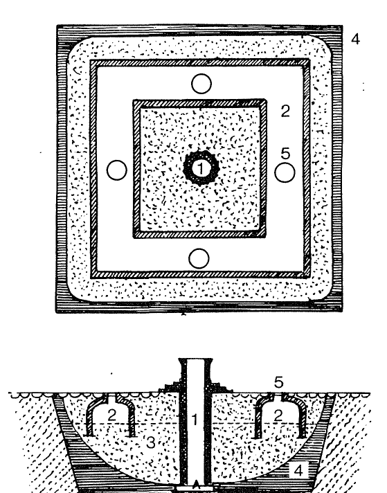
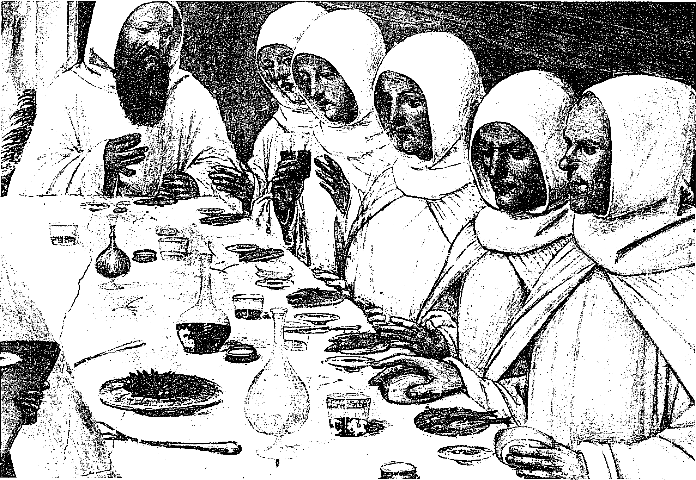
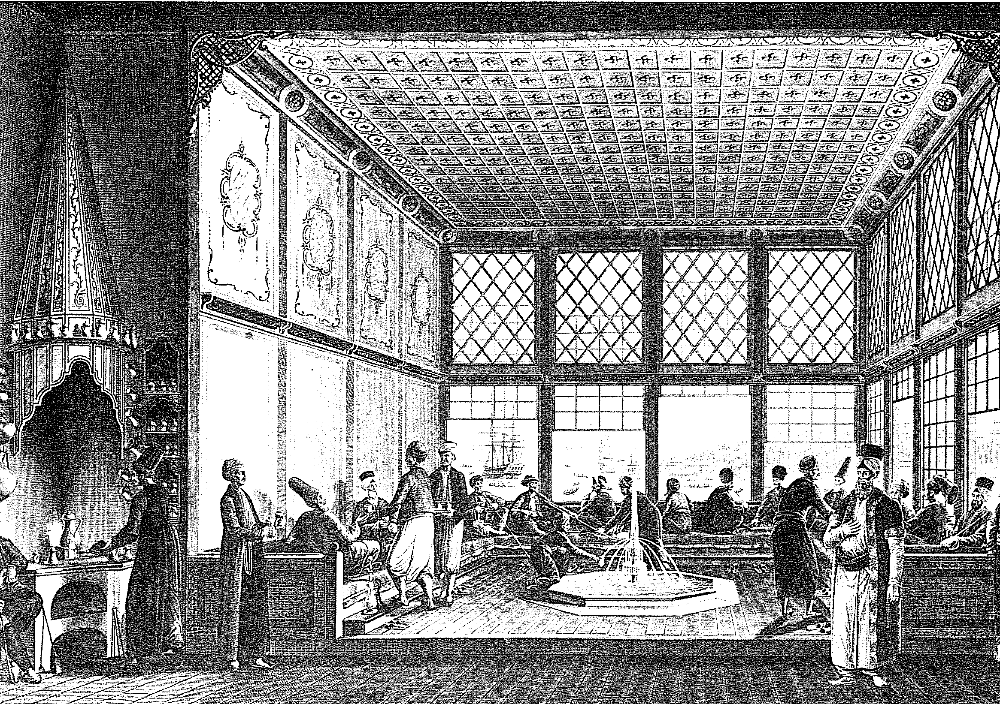

Hızlı bir içecek tarihi için bile, eskilerini ve yenilerini, popüler ve nadide olanlarını, bunların her birinde yüzyıllar boyunca meydana gelen değişmeleri gündeme getirmek gerekir. İçecekler yalnızca besin değildirler. Bunlar ezelden beri güç verici olma, kaçış olanağı sağlama rolünü oynamaktadırlar: bazı Kızılderili kabilelerinde olduğu gibi, sarhoşluk bazen doğaüstüyle iletişim kurmanın aracıdır. Her ne olursa olsun, alkolizm Avrupa'da bizi ilgilendiren yüzyıllar esnasında artmayı sürdürmüştür. Daha sonra ona, şu egzotik muharrikler eklenmiştir: çay, kahve ve ne besin ne içecek olan, ama gene de bir “güç verici” olan, tüm biçimleriyle şu tütün.
Su
Paradoksal olarak, işe sudan başlamak gerekir. Su her zaman, istenildiği kadar sahip olunan bir şey değildir ve hekimlerin hastalığın cinsine göre, şu suyun bu suya nazaran tercih edilmesini iddia ederek verdikleri kesin talimatlara rağmen, elinin altında bulunanlarla yetinmek gerekmektedir: yağmur suyu, nehir suyu, çeşme suyu, sarnıç suyu, kuyu suyu, her temkinli evde ihtiyat olarak bulundurulmasının bilgece olduğu fıçı veya bakır kap suyu. Uç durumlar: XVI. yüzyılda Kuzey Afrika İspanyol presidio’larında imbikten geçirilerek damıtılan deniz suyu; aksi taktirde İspanya veya İtalya'dan su getirtmek gerekir. 1648'de Kongo'da yolculuk yapmakta olan, aç, yorgunluktan bitmiş, toprak üstünde yatan ve “at sidiğini andıran su içmek” zorunda olan şu seyyahların durumu ümitsizdir." Başka bir belâ: gemilerdeki tatlı su. Bu suyu içilebilir halde tutmak, birçok reçete ve kıskançlıkla saklanan sırra rağmen, çözümsüz bir sorundur.
Zaten birçok kentin tümü, zengin olmalarına rağmen, su bakımından fakirdir; meydanlardaki veya saray avlularındaki kuyuların sanıldığı gibi lagün tabanının altında ulaşılacak olan su tabakasına kadar kazılmayıp da, aslında yarısına kadar ince kumla doldurulmuş olan ve yağmur sularının filtre olup, çökeldiği, sonra da onlara ortalarından bağlı olan kuyulara ulaştığı sarnıçlardan ibaret olan Venedik'in durumu böyledir. Yağmur uzun bir süre yağmazsa, sarnıçlar, Stendhal'in bu kentteki ikameti esnasında olduğu gibi, kurumaktadırlar. Fırtına patladığında ise, tuzlu su içlerine girmektedir. Bu sarnıçlar olağan zamanda, kentin muazzam nüfusu karşısında yetersiz kalmaktadırlar. Tatlı su dışarıdan gelmelidir ve gelmektedir; ama su kemerleriyle değil de, Brenta'da doldurulan ve her gün Venedik kanallarına ulaşan kayıklarla gelmektedir. Hollanda'nın sarnıçlara, derinlikten yoksun kuyulara, kanalların kuşkulu sularına mahkûm tüm kentleri için de aynı sıkıcı durum söz konusudur.
Bütün itibariyle, çalışan çok az su kemeri vardır: İstanbul'un ünlü ve bu ünü hak eden kemerleri, Segovia'nın Romalılardan kalma ve ziyaretçileri büyüleyen la puente’si (1841'de onarılmıştır). Acaba bu bir rekor mudur? Portekiz'de XVII. yüzyılda Coimbre, Tomar, Vica de Conde, Elvas su kemerleri çalışmaktadır. Lizbon'da 1729-1748 arasında inşa edilen yeni Akar Su kemeri, egzantrik Rato meydanına su getirmektedir. Herkes bu çeşmeden su almak için kavga etmekte, hamallar buraya, omuzlarında taşıdıkları, demir tutacaklı kırmızı fıçıcıklarını doldurmaya gelmektedirler. Büyük Kopuş'tan sonra Vatikan'ı tekrar ele geçiren V. Martin'in ilk işinin, Roma'nın harab olmuş su kemerlerinden birini onartmak olması mantıklıdır. Daha sonra, XVI. yüzyılın sonunda, büyük kenti besleyebilmek için iki yeni su kemeri -aqua Felice ve aqua Paola- inşa etmek gerekmiştir. Cenova'da çeşmelerin beslenmesi, esas itibariyle Scuffara su kemeri tarafından sağlanmaktadır. Bu su kemerinin suları surların içindeki değirmeleri döndürdükten sonra, kentin mahallelerine dağıtılmaktadır. Kentin batı kesimi pınarlardan ve sarnıçlardan beslenmektedir. Paris'te Belleville su kemeri 1457'de onarılmıştır; bu kemer Pre-Saint-Cervais su kemeriyle birlikte XVII. yüzyıla kadar kenti besleyecektir; Marie de Medicis tarafından yeniden inşa ettirilen Archulie kemeri, Rungis suyunu Luxembourg'a kadar taşımaktadır. Büyük su dolapları bazen kentlilere su sağlamak üzere, nehir sularını yükseltmekteydiler (Toledo 1526, Augsburg 1548) ve bu iş için büyük emme-basma tulumbalar kullanılmaktaydı. 1603-1608 arasında yapılan Samaritaine pompası, Seine'den aldığı sudan, günde 700 m3'e kadar basmaktaydı ve bu su Louvre ile Tuileries saraylarına verilmekteydi; Notre-Dame köprüsü pompaları 1670'de, aynı kaynaktan 2.000 m3 basacaklardır. Su kemeri ve pompa suları daha sonra, pişmiş topraktan (tıpkı Roma çağındaki gibi) veya içi boşaltılmış ve birbirlerine bağlanmış ağaç gövdelerinden kanallar aracılığıyla dağıtılmaktaydı (bu ahşap kanallar XIV. yüzyıldan itibaren Kuzey İtalya'da, 1471'de Breslau'da görülmüştür) ve hatta kurşun borular kullanılmaktaydı, ama 1236'da İngiltere'de var olduğu bildirilen kurşun borular, sınırlı bir kullanıma konu olacaklardır. “Hiç de iyi olmayan” Thames suyu, 1770'te Londra'nın tüm evlerine, yeraltına döşenmiş ahşap borularla ulaşmaktadır, ama bizim alışık olduğumuz akar su biçiminde değil: bu su “haftada düzenli olarak üç kere ve her evin tüketimi oranında verilmektedir... bu su alınmakta ve demir çemberler geçirilmiş büyük borularda muhafaza edilmektedir.”

VENEDİK'TE BİR SARNIÇ KUYU: KESİT VE RÖLÖVE
1. Merkezi huyu 2. Yağmur suyu toplayan hazneler 3. Arıtma kumu 4. Kil sıva 5. Halk arasında pilele (sözlük anlamı, okunmuş kilise su kabı) olarak adlandırılan, toplayıcı haznelerin ağzı. Arıtılan su merkezi kuyuya girmektedir. Venedik bugün su kanalizasyonuna sahiptir, fakat meydanlarda veya evlerin içinde eski kuyular hâlâ durmaktadır. (Kaynak: E. R. Trincanato)
Paris'in en büyük su kaynağı olarak hâlâ Seine vardır. Sakaların sattığı suyu, tüm liyakatlere sahip sayılmaktadır: su içenleri ilgilendirmeyen özelliği, çamurlu ve buna bağlı olarak ağır olduğu için, tekneleri daha iyi kaldırmasıdır (bir Portekiz temsilcisi bunu 1641'de kaydetmiştir); “Pelletier rıhtımını yalayan nehir kolunun üzerinde ve iyi köprü arasında, çok sayıda boyacı, boyalarını haftada üç kere nehre yaymaktadır... Gevres rıhtımının meydana getirdiği kemer bir hastalık saçma merkezidir. Kentin bu kesiminin tümü hastalıklı bir su içmektedir” demektedir. Üzülmeyelim, kısa bir süre sonra buna çare bulunacaktır. Ve Seine suyu sol kıyıdaki kuyu sularından daha iyiydi, çünkü bunlar korkunç arışmalara karşı hiç de korunaklı değillerdi ve fırıncılar ekmeklerini bu suyla yapıyorlardı. Doğal bir müshil olan bu nehir suyu tabii ki “yabancılar için uygunsuzdu”, fakat bunlar bu suya birkaç damla sirke katabilirler, filtre edilmiş ve “iyileştirilmiş” su, hatta kral suyu denilen suyu alabilirler, veyahutta “daha da pahalı olan” Bristol suyu denileninden satın alabilirlerdi. Su damıtmak 1760'lara kadar bilinmemiştir. “(Seine) suyu, fazla aldırmadan içilmekteydi.”
Öte yandan, Paris'in bu su iaşesi her gütı 30 kadar “yol”u (yani her seferinde iki kova) en yüksek katlara çıkartan (yol başına 2 sol) 20.000 sakaya iyi bir geçim sağlamaktadır. Demek ki Perrier kardeşlerin, 1782'ye doğru Chaillot'ya iki tane ateşli pompa yerleştirmeleri bir devrimin habercisi olmuştur; bunlar “yalnızca kaynayan suyun buharıyla” suyu Seine'in alçak düzeyinden 110 ayak yüksekliğe çıkartan “çok merak uyandırıcı makineler”dir. Bu, birkaç yıldan beri 9 pompa kurmuş olan Londra'yı taklit etmek demektir. En zengin, dolayısıya bu gelişmeyi ödeme gücüne en fazla sahip olan Saint-Honore mahallesi, bu hizmete ilk kavuşanı olacaktır. Ama bu makineler çoğalınca 20.000 sakaya ne olacak diye endişe duyulmaktadır. Ve zaten girişim, kısa bir süre sonra mali bir skandala dönüşecektir (1788). Ne önemi var! XVIII. yüzyılla birlikte içme suyu sevkiyatı sorunu açıkça ortaya konulmuş, çözümler görülmüş, bunlara bazen ulaşılmıştır. Ve yalnızca başkentler için değil. Örneğin, Ulm kenti için yapılan bir proje (1713), tersini kanıtlamaktadır.
Her şeye rağmen, gelişme gecikmeli olmuştur. Gelişme tamamlanana kadar, saka dünyanın tüm kentlerinde hizmetini dayatmıştır. Portekizli seyyahımız, III. Felipe döneminde Valladolid'de büyüleyici damacanalar veya her biçim ve renkteki toprak testilerde satılan mükemmel suyu methetmektedir. Çin'de, Paris'tekinin de yaptığı gibi, saka sopanın iki ucuna taktığı ve birbirlerini dengeleyen iki kova kullanmaktadır. Ama 1800'lere ait bir resim, Pekin'de arkasında bir tıkacı olan tekerlekli büyük bir fıçıyı göstermektedir. Aynı tarihlerde, bir gravür “Mısır'da kadınların su taşıma biçimini” açıklamaktadır; bu kadınlar suyu antik amforları hatırlatan küplerin içinde taşımaktadırlar, büyük olanı başın üstündedir ve sol elle tutulmaktadır, küçüğü ise, büyük sağ kolun iyiliksever bir şekilde ileriye uzatılmasıyla taşınmaktadır. Günde birçok kereler akar suyla abdest alma konusundaki dinsel zorunluk, İstanbul'un her yerinde çeşmelerin çoğalmasına yol açmıştır. Acaba bugün Türkler, tıpkı bir Fransızın farklı şarap mahsullerini tanımakla övüneceği gibi, çeşitli su kaynaklarının lezzetini ayırmakla, bu nedenden ötürü mü övünmektedirler?
Çinlilere gelince, bunlar" suya, kökenine göre farklı erdemler atfetmekle kalmamakta -adi yağmur suyu, sağanak suyu (tehlikeli), ilkbahar yağmuru suyu (iyilik dolu), doluların erimesi veya kış kırağısından kaynaklanan su, mağara sarkıtlarından toplanan su (şahane ilaç), nehir, pınar, kuyu suları-, aynı zamanda çevre kirliliği tehlikelerini ve kuşkulu her suyun kaynatılmasının yararlarını tartışmaktadırlar. Zaten Çin'de yalnızca sıcak içecekler içilmektedir ve bu alışkanlık (hatta sokaklarda kaynar su satıcıları vardır) herhalde Çin halkının sağlığına önemli ölçüde katkıda bulunmuştur.
Bunun tersine, İstanbul'da sokaklarda her yerde, bir akçeye kar suyu satılmaktadır. Portekizli Bartolomeo Pinheiro de Veiga, XVII. yüzyılın başında Valladolid'de de, sıcak aylar esnasında insanın küçük bir fiyat karşılığında kendine “soğuk su ve buzlu meyva” ziyafeti çekebilmesi karşısında büyülenmiştir. Fakat kar suyu çoğu zaman, yalnızca olanaklılara ayrılmış bir lükstür. Örneğin bu, suyun tadını ancak III. Henri'nin kaba bir şakasından itibaren tanıyan Fransa'nın durumudur. Ve kar yüklü teknelerin bazen odukça uzun yolculuklar yaptıkları Akdeniz çevresinde. Örneğin Malta şövalyeleri Napoli'den kar suyu getirtmektedirler ve 1754 tarihli bir dilekçe, ateşlerini kesmek için bu “şahane ilaç” olmazsa, ölecklerini ifade etmektedir.
İçmesi söz konusu olduğunda, şarap Avrupa’nın tümünü gündeme getirmektedir; ama üretimi söz konusu olduğunda, yalnızca belli bir Avrupa kesimi. Şarap değilse bile, bağın Asya, Afrika ve bunlardan daha fazla Yeni Dünya'da bazı başarılara ulaşmış olmasına ve Avrupa'nın baskıcı örneğine göre, tutkuyla yeniden biçimlendirilmesine rağmen, yalnızca bu sonuncu ve dar kıtanın önemi vardır.
Şarap üreticisi Avrupa, Akdeniz bölgesindeki ülkelerinin tamamı, artı bağcıların sebatının ona kuzey yönünde eklediği bir alandır. Jean Bodin'in dediği gibi, “bağ soğuk yüzünden, 49. derecenin ötesinde artık yetişemez.” Loire'ın Atlantik'teki ağzından Kırım'a ve bunun ötesinde, Gürcistan ve Transkafkasya'ya çizilen bir hat, bağın ticari olarak yetiştirilme sınırını işaret etmektedir, yani Avrupa'nın ve Doğu'ya doğru uzantılarının ekonomik hayatının büyük eklemleşmelerinden birini. Kırım gibi yukarı bir bölgede, bu bağcı Avrupa'nın kalınlığı, bir kıyı şeridine inmektedir ve burası ancak XIX. yüzyılda güç ve kuvvet kazanabilecektir. Ama buradaki bağcılık gene de çok eskidir. Antikite boyunca burada, kış gelmeden önce, onları Ukrayna'nın soğuk rüzgârlarından korumak üzere, üzüm gövdeleri gömülmekteydi.
Şarap Avrupa dışında, Avrupalıları izlemiştir. Üzümü Meksika, Peru, 1541'de denemeye başlayan Şili, Buenos Aires'in 1580'de ikinci kuruluşundan itibaren Arjantin'de tutturabilmek için cesaretle uğraşmak gerekmiştir. Peru'da çok zengin bir kent olan Lima'nın yakınlığı yüzünden, bağ yakınlardaki sıcak ve sıtmalı vadilerde çabuk başarıya ulaşmıştır. Şili'de daha da başarılı olmuştur, çünkü burada toprak ve iklim onu teşvik etmektedirler: bağ daha doğmakta olan Santiago kentinin, aralarından sokak geçmeyen ilk evlerinin cuadras’ının arasında büyümektedir bile. Drake 1578'de Valparaiso açıklarında, Şili şarabı yüklü bir tekneyi ele geçirmiştir. Bu aynı şarap, katır veya lama sırtında, yüksekteki Potosi menziline ulaşmaktadır. Kaliforniya'da XVII. ve XVIII. yüzyıllarda, İspanyol imparatorluğunun kuzeye doğru sonuncu ilerlemesini beklemek gerekmiştir.
Fakat en çarpıcı başarılar Atlantiğin ortasında, Eski ve Yeni Dünyanın arasında (hem yeni Avrupalar hem ön-Amerikalar) meydana gelmiştir; bunların başında, kırmızı şarabın giderek şekerin yerine geçtiği Madeira adası; sonra, uluslararası ticaretin şarabın yarı yolunda yüksek bir alkol derecesi bulduğu ve siyasetin işe karışmasıyla (Lord Methuen'in Portekiz'le yaptığı antlaşma 1704 tarihlidir) Fransa'nın La Rochelle ve Bordeaux şaraplarının yerine geçerek avantaj sağladığı Azorlar; nihayet, özellikle beyaz şarabının Anglo-Saxon veya İberya Amerika'sına, hatta İngiltere'ye geniş ölçekte ihraç edildiği Tenerif olmak üzere, Kanarya adaları gelmektedir.
Avrupa'nın güney ve doğusuna gidildikçe, bağ islamiyetin inatçı engeliyle karşılaşmaktadır. İslamiyetin denetimi altındaki mekânlarda bağın yerli yerinde durduğu ve şarabın burada yorulmaz bir kaçak yolcu olarak ortaya çıktığı da doğrudur. İstanbul'da, Tersane'nin yakınlarında meyhaneciler Rum denizcilere her gün şarap satmaktadırlar ve Kanuni Süleyman'ın oğlu II. Selim Kıbrıs'ın likörlü şarabını fazlasıyla sevecektir. Kapüsenlerin kendi asma çardaklarının ve yalnızca pazar ayininde kullanmakla kalmadıkları kendi şaraplarının olduğu İran'da, Şiraz ve İsfahan şarap mahsullerinin ünü ve kendi müşterileri vardır. Bu şaraplar, bizzat İsfahan’da imal edilen ve sorgun sepetlerin içine konulan kocaman damacanalarla, ta Hind'e kadar gitmektedirler. 1526'dan itibaren Delhi sultanlarının ardılı olan Büyük Moğolların (Mugal hanları), pirinç alkolüne, araka düşkün olmaktansa bu İran şaraplarıyla yetinmemeleri ne büyük mutsuzluktur!
Böylece Avrupa tek başına, şarap sorununun esasını özetlemektedir: bağın kuzey sınırına, Loire'dan Kırım'a olan şu uzun eklemleşmeye geri dönmek uygun düşmektedir. Bir yanda yerel şaraba, onun ihanetlerine olduğu kadar, iyiliklerine de alışkın üretici ve tüketici köylüler; öte yanda da, her zaman deneyimli olmayan, fakat kendilerine has talepleri olan ve olağan olarak yüksek dereceli şarapları tercih eden büyük içiciler: örneğin İngilizler çok erkenden bu hale gelmişler ve Malvoisie şaraplarına büyük bir ün kazandırmışlardır -Girit ve Yunan adalarının pişmiş şarabı-. İngilizler daha sonra porto, malağa, madera, jerez, marsala şaraplarını lanse edeceklerdir, bunların hepsi de yüksek alkollü, ünlü şaraplardır. Hollandalılar XVII. yüzyıldan itibaren tüm rakılara şans getireceklerdir. Demek ki damak zevkleri değişmektedir. Güney, kendi fikrine göre içmesini bilmeyen ve kadehlerini kafalarına dikerek bir kerede boşaltan bu kuzeyli içkicilere alaylı bir şekilde bakmaktadır. XII. Louis'nin kronikçisi olan Jean d'Anton, Alman askerlerin Forli şatosunu yağmalarken, böyle aniden “dringle”ye (trinken) başladıklarını görmüştür. Ve zaten, 1527'deki korkunç Roma yağması esnasında, kim onların fıçıların dibini delerek, ölünceye kadar sarhoş olduklarını görmeyecektir ki? Köylü bayramlarını temsil eden XVI. ve XVII. yüzyıl Alman gravürlerinde, hemen her seferinde, konuklardan biri, çok fazlasıyla bol içki ikramını geri vermek üzere, sırasının üzerinde arkaya dönmüş olarak gösterilmektedir. Bâleli Felix Platter 1556'da Montpellier'deki ikameti esnasında, kentin tüm “sarhoşlarının” Alman olduklarını kabul etmektedir. Onları fıçıların üzerinde horlarken ve her zaman oynanan farsların baş alay konusu olarak bulmak mümkündür.
Kuzeyin bu büyük miktarlı tüketimi, Güneyden hareket eden büyük bir ticareti belirlemektedir: denizyoluyla, Sevilla ve Andalusya'dan İngiltere ve Flandre'a; veya Dordogne, Garonne nehirleri boyunca Bordeaux ve Gironde'a; La Rochelle veya Loire ağzından itibaren; Yonne boyunca, Burgonya'dan Paris'e, sonra daha ötede, Rouen'a; Ren boyunca; Alplerden geçerek (her bağbozumunun ertesinde, İtalyanların carretoniler dedikleri koskoca Alman arabaları, Tirol, Brescia, Vicenza, Friuli, istria'dan taze şarap almaya gelmektedirler); Moravya ve Macaristan'dan Polonya'ya doğru; kısa bir süre sonra Portekiz, İspanya ve Fransa'dan itibaren Baltık yolları aracılığıyla Saint-Petersburg'a ve Rusların şiddetli ama deneyimsiz susuzluklarına doğru. Tabii ki Kuzeyin tüm halkı değil de, yalnızca zenginleri şarap içmektedir. Örneğin Flandre'daki bir burjuva veya arpalığı olan bir din adamının XIII. yüzyıldan; eğer köylüler gibi kendi çektiği birayı içerse, mertebesine aykırı davranmış olduğunu düşünecek Polonyalı bir soylunun XVI. yüzyıldan itibaren yaptığı gibi. 1513'te Alçak Ülkeler'de esir olan Bayard, orada herkese sofralar kurduğunda, şarap o kadar pahalıdır ki, “bazı günler şarap için 20 ekü harcaması” gerekmiştir.

Manastırda yemek: liste kanaatkârdır, ama Akdeniz'de gündeliğin parçası olan şarabı dışlamamaktadır. Signoretti'nin freskosu, XV. yüzyıl, Siena, Monte Oliveto manastırı.
Böyle yolculuk yapan, her yerde beklenen, sevinçle karşılaşan taze şaraptır. Çünkü şarabı korumak zordur, zira fıçıdan aktarma, şişeleme, mantar gibi şeyler XVI. yüzyılda, hatta belki XVII. yüzyılda henüz bilinmediği için, şarap acılaşmaktadır. Öylesine ki, 1500'lere doğru bir fıçı eski Bordeaux şarabı ancak 6 lira ederken, yeni şarap 50 lira ediyordu. XVIII. yüzyılda ise, bunun tamamen tersine, her şey düzene girmiştir ve Londra'da şarap tüccarlarının hesabına kullanılmış şişe toplamak, kentin ayak takımı için iyi bir gelir kaynağı olmuştur. Buna karşılık şarap, çok uzun zamandan beri tahta fıçılarla (birbirine bitiştirilmiş ve çember geçirilmiş tahtalar) taşınmaktadır, Roma'daki amforla taşıma adeti çoktan terk edilmiştir (fakat şurada veya burada inatçı devamılıklar bulunmaktadır). Roma Galya'sında icad edilmiş olan bu fıçılar, şarabı her zaman iyi koruyamamaktadırlar. Mondejar dükü, 2 Aralık 1539'da V. Carlos'a “hayır, donanma için büyük miktarda alınması gerekir. Eğer kendiliklerinden sirkeye dönüşeceklerse, bunların Majestelerinde kalmasıhdansa, sahiplerinde kalması daha iyidir” diye tavsiyede bulunmaktadır. Bir ticaret sözlüğü XVIII. yüzyılda bile, Rumenlerin “şarabın eskiliğini onun iyiliğinin işareti olarak kabul etmeleri" karşısında şaşırmaktadır, “oysa Fransa'da şarapların beşinci veya altıncı yaprağa (yani yıla) kadar çıkmaları halinde, onların aşınmış oldukları düşünülmektedir (korunmaya en yatkın olan Dijon, Nuits, Orleans şarapları için bile)." Encyclopidie dobra dobra, “bazılarının övdüğü dört veya beş yıllık şaraplar aşınmış şaraplardır” demektedir. Ancak Gui Patin dekan oluşunu kutlamak üzere, meslektaşlarından otuz altısını davet ettiğinde, “ciddi insanların bu kadar güldüğünü ve bu kadar içtiğini görmedim” diye anlatmaktadır. “Bu ziyafet için en iyi eski Burgonya şarabı almıştım.”
Büyük şarap mahsullerinin ünü XVIII. yüzyıla kadar kendilerini kanıtlayamamıştır. En tanınmışları, bu özelliklerini liyakatlerinden çok, yakınlarındaki yol kolaylıklarına ve özellikle de su yollarının yakınlığına (örneğin Languedoc kıyısındaki küçük Frontignan bağı gibi; Andalusya, Portekiz, Bordeaux veya La Rochelle'in geniş bağlan); veya büyük bir kentin yakınında olmaya borçlu olmuşlardır; Paris tek başına, Orleans'ın ürettiği 100.000 fıçıyı emmektedir (1698); Napoli krallığının greco, latino, mangiaguerra, lacryma christi şarapları, hemen yanı başlarında muazzam Napoli, hatta Roma müşteri kitlesini bulmaktadırlar. Şampanyaya gelince. XVIII. yüzyılın ilk yarısında imal edilmeye başlayan beyaz köpüklü şarabın ünü, kırmızı, boz veya beyaz eski mahsulleri silmek için zamana ihtiyaç duyacaktır. Fakat XVIII. yüzyılın ortasında bu iş tamamlanmıştır: bugünün tüm büyük mahsulleri farklılıklarını kanıtlamışlardır. Sebastien Mercier 1788'de “Romanee'nin kırmızı ve beyaz Sa- int-Vivant, Citeaux, Grave şaraplarını tadınız... ve eğer rastlarsanız Tokay şarabına yaslanın, çünkü benim kanaatime göre bu dünyanın bir numaralı şarabıdır ve onu içmek yalnızca dünyanın efendilerine has bir iştir.” Savary'nin Ticaret Sözlüğü, 1762'de Fransa'nın tüm şaraplarını sıralarken, zirveye şampanya ve burgonyayı yerleştirmektedir. Ve zikretmektedir: “Chablis... Pomar, Chambertin, Beaune, le Clos de Vougeau, Volleney, Romanee, Nuits, Marsault.” Mahsullerin farklılaşmasıyla, şarabın giderek lüks bir ürün halinde geliştiği aşikârdır. Dictionnaire Sentencieux’nun demelerine göre, sabler le vin de Champagne (şampanyı bir dikişte içmek) deyimi aynı sıralarda (1788) çıkmıştır; bu “havası iyi insanlar arasında, birden bire yutmak anlamına gelen moda deyimdir.”
Fakat tarihlerinin bizi kolaylıkla çok uzağa taşıyabilecekleri bu incelemelerden çok, bizi burada ilgilendiren, sayıları sürekli artan sıradan içkiler olmaktadır. XVI. yüzyılda sarhoşluk her yerde artmıştır: örneğin yüzyılın ortasında tüketimin yılda kişi başına 100 litreye ulaştığı Valladolid'de; 1598'de Signoria'nın halkın sarhoşluğuna karşı sert tedbirler almak zorunda kaldığı Venedik'te; XVII. yüzyılın başında Laffemas'nın bu konuda katı olduğu Fransa'da durum böyledir. Oysa bu yaygın kentsel sarhoşluk kaliteli şaraba da ihtiyaç duymamaktadır; içki sağlayan bağlardaki kaba asmalardan elde edilen, yüksek verimli üzüm kural haline gelecektir. XVIII. yüzyılda bu hareket bizzat kırları da kapsamına almış (meyhaneler buralarda köylüleri iflas ettirmiştir) ve kentlerde de hızını artırmıştır. Bu kitle tüketimi kural haline gelmiştir. Bu Paris'in burnunun dibinde, şaraptan şu “içi yalnızca üç sol eden şarabın şişesi başına dört sol olarak alınan giriş” vergisi olan aide alınmayan kent surlarının hemen dışında, kır meyhanelerinin zaferlerinin başlangıcıdır.
Küçük burjuvalar, zenaatkârlar ve yosmalar,
Hepiniz Paris'ten çıkın ve kır meyhanelerine koşun
Burada iki pinte fiyatına dört alırsınız
Örtüsüz, peçetesiz iki tahta tekneden masanın üstünde,
Bu Bacchus'a ait yerlerde öyle bir içersiniz ki,
Şarap gözlerinizden çıkar.
Döneme ait bir gravürün altında yer alan, fakirler için olan bu prospektüs uydurmamaktadır. Bunun sonucunda, yakın banliyödeki meyhaneler talihe ermişlerdir; bunlardan biri, Belleville “engeli” yakınında olan ve bir çağdaşın, adı “kalabalık arasında Voltaire ve Buffon'unkinden bin kere daha tanınmış olan” dediği bay Ramponeau tarafından kurulmuş olan ünlü Courtille'dir. Veya kadınların ve erkeklerin toz ve gürültü içinde yalınayak dans ettikleri, Vaugirard'daki “ünlü dilenciler salonu”. “Vaugirard dolduğunda, pazar (günü gelen) halk Petit Gentilly'ye, Porcherons'a ve Courtille'e üşüşmektedir: ertesi gün, şarap satıcılarının dükkânlarının önünde düzinelerle boş fıçı görülmektedir. Bu insanlar sekiz günlük içmektedir.” Madrid'de de “kentin dışında iyi ve ucuz şarap içilmektedir, çünkü burada şarabın fiyatını aşan resimler ödenmemektedir.”
Sarhoşluk, şarabın lüksü müdür? Hafifletici nedenler olduğunu söyleyerek savunma yapalım. Devrim arefesinde Paris'te tüketim, yılda adam başına 120 litre civarındadır ki, bu bizatihi bir rezalet değildir. Gerçekte şarap, özellikle düşük kaliteli şarap, ucuz bir gıda haline gelmiştir. Hatta buğday çok pahalılandığında, onun fiyatı nisbi olarak düşmektedir. İyimser bir tarihçi olan Witold Kula'yla birlikte, şarabın alkol gibi bir telâfi mi, yani ekmeğin kıt olduğu her seferinde, ucuz kalori olduğuna mı inanacağız? Yoksa daha basit bir şekilde, kıtlık döneminde keseler boşaldığı için, şarabın daha az alıcısı olduğundan, fiyatının zorunlu olarak düştüğünü mü düşüneceğiz? Hayat seviyesini her halükârda bu arızi sefahate bakarak yargılamayalım. Ve ister kalori olsun, ister olmasın, şarabın çoğu zaman bir kaçış olduğunu, Kastilyalı bir köylünün bugün bile quita-penas, acıların unutulması, elemleri kovan olarak adlandırdığı şey olduğunu düşünelim. Bu, Velasquez'in iki dalaverecisinin kırmızı şarabı (Budapeşte müzesi) veya Hollanda resminde yer alan ve daha değerliymiş gibi gözüken uzun flütler ve muhteşem kadehlerdeki altın sarısı, kıvamlı şaraptır: burada içki- cinin mutluluğu için şarap, tütün, kolay kızlar ve XVII. yüzyılın moda haline getirdiği küçük kemanların müziği birleşmektedir.
Eğer Amerika için geçerken sözünü ettiğimiz şu mısır birası dışta tutulacak olursa, Afrika zencilerinin ayinlerinde, Batıkların ekmek ve şarabının oynadığı rolün aynını oynayan şu darı birası hesaba katılmayacak olursa; nihayet, bu çok eski içkinin uzak kökenleri üzerinde ölçüsüzce ısrarlı olmazsak, Avrupa bizi bira ile meşgül etmeye devam edecektir. Gerçekten de bira, Eski Babil'de olduğu kadar, Mısır'da da ezelden beri bilinmektedir. Çin'de de II. binin sonundan itibaren, Şanglar zamanında bilinmektedir. Birayı az sevmiş olan Roma imparatorluğu, ona özellikle Akdeniz'in uzağında rastlamıştır; örneğin Scipion tarafından M.Ö. 113'te kuşatılan Numance'da veya Galya'da olduğu gibi. İmparator Julianus Apostates (361-363) onun bir kere tadına bakmış ve arkasından söylemediğini bırakmamıştır. Fakat IV. yüzyılda Trier'de, karşımıza fakirlerin ve barbarların içkisi olarak bira fıçılan çıkmaktadır. Charlemagne zamanında bira, onun tüm imparatorluğu ölçeğinde görücüye çıkmıştır ve bizzat onun saraylarında, cervisam bonam... facere debeant, iyi bira yapmakla görevli biracı ustaları bulunmaktadır.
Bira imal etmek için buğday, yulaf, çavdar, darı, arpa veya hatta karabuğday mayalandırılmadadır. Hiçbir tahıl asla tek başına işlemden geçmemektedir: bira imalatçıları bugün malt, şerbetçiotu ve pirinç katmaktadırlar. Ama dünkü reçeteler çeşitliydi ve bira horozibiği, mantar, aromalı bitkiler, bal, şeker, defne yaprakları... ile daha cazip hale getirilmekteydi. Çinliler de darı veya pirinç “şarapları”na aromatik katkılar, hatta ezcalar ilâve etmekteydiler. Bugün Batı'da genelleşmiş olan şerbetçiotu (biraya acılığını sağlamakta ve muhafazasını mümkün kılmaktadır) kullanımı, VIII. veya IX. yüyıl manastırlarından kaynaklanmış olmalıdır (ilk zikredilme tarihi 822); şerbetçiotu kullanımı XII. yüzyılda Almanya'da; XIV. yüzyılda Alçak Ülkeler'de işaret edilmiştir; İngiltere'ye geç olarak, XV. yüzyılın başında ulaşmış ve biraz abartan (ama şerbetçiotu 1566'ya kadar yasaklanmıştır) bir nakaratın dediği gibi:
Hops, Reformation, bays and beer
Come into England all in one year.
Bağ alanının dışına yerleşen bira, İngiltere'den Alçak Ülkeler'e, Almanya'ya, Bohemya'ya, Polonya'ya, Moskof devletine kadar uzanan kuzey ülkelerinde, gerçekten kendi evindedir. “Biracıların efendilerini aldatmaya yatkın oldukları” Orta Avrupa senyör malikâneleriyle, kentlerde imal edilmektedir. Polonya malikânelerinde, köylü günde üç litreye varan bira tüketimi yapmaktadır. Tabii ki bira krallığının batıya veya güneye doğru belirgin sınırları yoktur. Hatta XVII. yüzyılda, Hollanda ilerlemesiyle birlikte, oldukça hızlı bir şekilde güneye doğru genişlemiştir. Bira imalathanelerinin kurulmasının güçlü bir şekilde engellendiği, şarap krallığı Bordeaux'da, ithal edilen bira, Hollandalılar ve diğer yabancılar tarafından sömürgeleştirilmiş olan Chartrons mahallesinin meyhanelerinde su gibi akmaktadır. Bundan daha iyisi, başka bir şarap, ama aynı zamanda uluslararası ticaret başkenti olan Sevilla'da, 1542'de bir bira imalathanesi kurulmuştur. Batıya doğru geniş ve belirsiz sınır bölgesinde bira imalathanelerinin kuruluşu hiçbir zaman bir devrim biçimine bürünmemiştir. Örneğin bağların vasat ve belirsiz verime sahip oldukları Lorraine'deki durum böyledir. Paris'e varana kadar durum böyledir. Le Grand d'Aussy'ye göre, (Fransızların Özel Hayatı, 1872) bira fakir içeceği olduğu için, her zor dönem tüketimini artırmış; ekonominin iyiye gittiği durumlarda ise, bunun tersine bira içicileri şarap içicileri haline dönüşmüştür. Geçmişten alman bazı örnekleri izleyerek eklediğine göre, “bizde Yedi Yıl Savaşlarının (1756-1763) aynı etkileri yaptığını görmedik mi? O zamana kadar şaraptan başka bir şey bilmeyen kentler, bira kullanmasını öğrendiler ve ben kendim, Champagne'da, tek bir yıl içinde, bir seferinde dört bira imalathanesinin açıldığını gördüm.”
Ancak 1750-1780 arasında, bira Paris'te uzun bir bunalım yaşayacaktır (fakat çelişki ancak görünüştedir, çünkü bu devre, uzun dönem olarak, ekonomik açıdan iyidir). Biracı sayısı 75'ten 23'e düşmüş, üretim de 75.000 müdden (1 müd: 286 libre) 26.000 müde gerilemiştir. Zavallı biracılar, çünkü her yıl elma rekoltesiyle ilgilenmeleri ve bira cephesinden kaybettiklerini elma şarabı cephesinden kazanmaya uğraşmaları gerekmektedir. Bu açıdan durum, Devrim arefesine kadar düzelmemiş; şarap en büyük galip olmayı sürdürmüştür: 1781-1786 arasında Paris'te şarap tüketimi, yıllık yuvarlak rakam olarak, biranın 54.000 hl.'lik rakamına karşılık, 730.000 hl.'ye yükselmiştir (yani l'e 13,5'lik bir oran). Fakat işte Le Grand d'Aussy'nin tezini teyid edecek şey: 1820-1840 arası aşikâr ekonomik zorluklar döneminde, gene Paris'te şarap tüketimi l'e 6,9 oranına gerilemiştir. Biranın nisbi bir ilerlemesi olmuştur.
Fakat bira yalnızca fakirlikle ilişkili değildir, yani evde yapılan ve her gün cold meat ve oat coke'e eşlik eden small beer de olduğu gibi değildir. Yarım kuruşa satılan halk birasının yanında, Alçak Ülkeler XVI. yüzyıldan itibaren zenginlere yönelik bir birayı Leipzig'den ithal etmekledir. Londra'daki Fransız elçisi, 1687'de Seignelay markisine İngiliz birasından “tadı Fransa'da hiç hoşa gitmeyen, şarap gibi sarhoş eden ve onun kadar pahalı olan sert bira” değil de, “Lambert birası denileni”nden düzenli olarak yollanmaktadır. XVII. yüzyılın sonunda Brunschwig ve Bremen'den yüksek kalitede bir bira Doğu Hind adalarına kadar ihraç edilmektedir. Almanya'nın tümünde, Bohemya'da, Polonya'da kentlerdeki bira imalathaneleri artmakta, çoğu zaman endüstriyel bir görünüm kazanmakta ve içine sıklıkla şerbetçiotu katılmamış olan, senyörlükler ve köylüler tarafından üretilmekte olan hafif birayı ikinci dereceye itmektedir. Bu konuda muazzam bir edebiyata sahibiz. Fiili durumda, bira bir yasama konusudur, aynı şekilde ne kadar tüketileceği de yasayla düzenlenmektedir. Kentler bira imalatını gözetim altında tutmaktadırlar; örneğin Nuremberg'te bira ancak Saint-Michel yortusuyla, tomurcuklanma günü arasında imal edilmektedir. Ve sayıları yıldan yıla artan ünlü biraları övmek üzere kitaplar basılmaktadır. Örneğin 1575'te yayınlanan Heinrich Knaust'un kitabı, bu ünlü biraların adlarının ve lâkaplarının listesini vermekte ve tıbbi yararlarını saymaktadır. Fakat bütün ünler değişmektedir. Her şeyin gecikmeli olduğu Moskof devletinde, tüketici “bira” ve rakıyı 1665'te bile, hâlâ “kamusal kantin”den sağlamakta ve gene tüccar ve tekelci bir devletin kasalarını doldurmak üzere, tuzlu balık, havyar ve Astrakan ile İran'dan ithal edilen, siyaha boyanmış koyun derilerini de buradan almaktadır.
Böylece dünyada milyonlarca “bira migdesi” vardır. Fakat bağ ülkelerinin şarapçıları bu kuzey içkisiyle alay etmektedirler. Nordlingen çarpışmasına katılan şu İspanyol askeri biraya karşı, yalnızca küçümseme duygusuna sahiptir; ona dokunmamaya dikkat etmektedir, “çünkü bana hep, ateşi olan bir atın sidiği gibi gözüküyor.” Fakat beş yıl sonra birayı deneme riskine girmiştir. Fleyhat, bütün o gece, içtiği “potes de purga", müshil çanaklarıdır. Bu da bir Flaman olan V. Carlos'un, Yuste'e çekildiği zaman, İtalyan hekiminin tavsiyelerine rağmen, bira tutkusundan vazgeçmemesini kanıtlamaktadır.
Elma şarabı hakkında iki cümle: Elma şarabına uygun elma ağaçlarının yetiştiği Bis- caye kökenlidir. Bu ağaçlar Cotentin, Caen kırları ve Auge ülkesinde XI. veya XII. yüzyılda görülmeye başlamışlardır. “Ticari” sınırının kuzeyinde olmakla birlikte, bağın da mevcut olduğunu kaydetmemiz gereken bu bölgede, ertesi yüzyıl elma şarabından söz edilmektedir. Fakat yeni gelen şaraba karşı hareket etmemekte, birayla, hem de başaryla rekabet etmektedir, çünkü bira demek tahıl demektir ve onu içmek, bazen kendini ekmekten mahrum etmektir.
Elma ağaçları ve elma şarabı bu sayede alan genişletmişlerdir. Doğu Normandiya'ya (Aşağı Seine ve Caux ülkesi) XV. yüzyılın sonuyla XVI. yüzyılın başında gelmişlerdir. 1484'te Etats Geniraux'da, bu eyaletin bir temsilcisi hâlâ Aşağı ve Yukarı (yani doğudaki) Normandiya arasındaki farkın, İkincisinde olan elma ağaçlarından birincisinin yoksun olması olduğunu söyleyebilmektedir. Bu Yukarı Normandiya'da bira ve özellikle şarap (örneğin Seine'in korunaklı mendereslerindeki bağlar gibi) zaten korunmaktadırlar. Elma şarabı ancak 1550'lere doğru ve tabii ki küçük insanlar cephesinde zafer kazanacaktır. Başarıları Aşağı Maine'de daha net olacaktır, çünkü burada XV. yüzyıldan itibaren, hiç değilse eyaletin güneybatısında, zengin içkisi haline gelecektir. Ancak Laval'de zenginler XVII. yüzyıla kadar direnmişlerdir, teslim olmadan önce de kötü şarabı duvarcılara, uşaklara, oda hizmetçilerine bıraktıkları elma şarabına tercih etmişlerdir. Acaba bu küçük değişmenin sorumluluğu XVII. yüzyılın ekonomik gerilemesine mi aittir? Tabii ki Normandiya, elma şarabının başkente ulaşmamasının mümkün olmadığı kadar Paris'e yakındır. Fakat hiçbir şeyi abartmayalım: bir Parisli 1781-1786 arasında ortalama olarak 121,76 1. şarap, 8,96 1. bira ve 2,73 1. elma şarabı tüketmiştir. Sonuncusu minik kalmaktadır. Örneğin yabani elmalardan elde edilen elma şarabının rekabetinin küçük olduğu Almanya'da da durum aynıdır.
Gene Avrupa'da (onun sınırlarını biraz sonra aşacağız) büyük yenilik, devrim, hayat suyu (rakı) ve tahıl alkolleridir, yani tek kelimeyle, alkoldür. Terim yerindeyse, XVI. yüzyıl alkolü yaratmış, XVII. yüzyıl onu ileri itmiş, XVIII. yüzyıl da avamlaştırmıştır.
Hayat suyu şarabın damıtılması, “yakılması” yoluyla elde edilmektedir. İşlem, imbik adını taşıyan (Yunanca ambicos'tan, bir içkinin damıtılmasının mümkün olduğu uzun boyunlu bir kap) bir alet gerektirmektedir ki, Yunanlılar, sonra da Romalılar bu aletin en fazla taslağına sahip olmuşlardır. Batı'da XII. yüzyıldan önce imbik vardır ve demek ki her cins alkollü içkiyi damıtma olanağı bulunmaktadır. Fakat şarabın damıtılması, uzun süre yalnızca eczacılar tarafından uygulanmıştır. İlk damıtımdan çıkan hayat suyu, sonra ikinci damıtımdan elde edilen şarap ispirtosu, ilke olarak “her tür nemden muaf” olarak ilaçtırlar. Alkol, belki de bu şekilde 1100'lere doğru, dönemin “en önemli kimya araştırma merkezi olan Salerno tıp okulunun" bulunduğu Güney İtalya'da keşfedilmiş olmalıdır. İlk damıtma işlemini ya 1315'te ölen Raymond Lulle'e ya da Montpellier ve Paris'te 1313'te hocalık yapan ve Sicilya ile Provence arasındaki bir yolculuk esnasında ölen, şu ilginç gezgin hekim Arnould de Villeneuve'e atfedenler halk masallarıdır. Arnould de Villeneuve Gençliğin Muhafazası adlı bir kitap bırakmıştır. Ona göre hayat suyu, aqua vitae, bir mucize gerçekleştirmekte, gereksiz ruh hallerini dağıtmakta, kalbi canlandırmakta, ishali, vücutta su birikmesini, felci, sıtma nöbetini iyileştirmekte, diş ağrılarını yatıştırmakta, vebadan korumaktadır. Fakat bu mucize ilaç Kötü Charles'a kötü anlar ile korkunç bir son hazırlayacaktır (1387): hekimler onu daha etkili olsun diye, büyük büyük dikilmiş ve hayat suyuna batırılmış bir örtüye sarmışlardır. Bu ipliklerden birini kopartmak isteyen bir hizmetkâr mumu yaklaştırınca, örtü ve hasta tutuşmuşlardır.
Hayat suyu, özellikle veba, nikris, ses kısılmasına karşı olmak üzere, uzun süre bir ilaç olarak kalmıştır. 1735'te bile bir Kimya Kitabı “yerinde kullanılan şarap ispirtosunun her derde deva” olduğunu iddia etmektedir. Bu tarihte, ispirto uzun zamandan beri, likör imalatında da kullanılmaktaydı. Fakat XV. yüzyılda bile, Almanya'da baharat kaynatılarak elde edilen likörler, ecza ürünleri sayılmaktaydılar. Değişiklik ancak yüzyılın son yılları ve izleyen yüzyılın ilk yıllarında belirgin hale gelecektir. Nuremberg'te 1496'da, hayat suyunun yalnızca hastalar arasında meraklıları yoktur, çünkü kent bayram günlerinde serbest alkol satışını yasaklamak zorunda kalmıştı. Hatta Nurembergli bir hekim 1493'e doğru şöyle yazmıştır: “şimdilerde herkesin aqua vitae içme adetine sahip olduğuna bakılınca, insanın eğer centilmen gibi davranmak istiyorsa, içebileceği miktarı hatırlaması ve kapasitesine göre içmeyi öğrenmesi gerekir.” Demek ki hiçbir kuşku yoktur; geprant wein, yanık şarap, vinum ardens veya metinlerin söylemeyi hâlâ sürdürdükleri şekliyle vinum sublimatum bu tarihlerde doğmuştur.
Fakat hayat suyu hekim ve eczacılardan, ancak küçük adımlarla kaçabilmiştir. XII. Louis sirkeciler loncasına hayat suyu damıtma ayrıcalığını ancak 1514'te tanımıştır. Bu, ilacın laikleştirilmesidir. 1. François 1537'de bu ayrıcalığı sirkeciler ile gazozcular arasında paylaştırmış, buna bağlı olarak, kazancın büyük olduğunu kanıtlayan kavgalar çıkmıştır. Hareket Colmar'da daha erken olmuştur, kent hayat suyu yakıcılarını ve hayat suyu tüccarlarını 1506'dan beri denetlemektedir ve ürün bu tarihten sonra, kentin mali ve gümrük dökümleri arasında yer almaktadır. Hayat suyu bu kentte çabucak, ulusal çapta bir endüstri kisvesine bürünmüştür; bu endüstri başlangıçta, başarılı bir bağ ülkesinde güçlü bir lonca olan fıçıcılar esnafına verilmiştir. Fakat bu fıçıcılar o kadar iyi iş yapmaktaydılar ki, 1511'den itibaren tüccarlar onun bu işini ele geçirmeye girişmişlerdir. Ancak 50 yıl sonra başarılı olacaklardır. Kavga sürmüştür, çünkü 1650'de fıçıcılar yeniden damıtma hakkını elde etmişlerdir, ama ürünlerini tüccarlara teslim etme koşuluyla. Bu durum, bu hayat suyu tüccarlarının arasında Colmar yurttaşlarının tüm şanlı adlarını fark etmenin ve bu ticaretin, daha o sıralarda bile büyük bir yer tuttuğunu görmenin fırsatını sunmaktadır.
Ancak hayat suyunun ilk endüstrisinin bir coğrafyası ve bir kronolojisinin taslağını çizebilmek üzere, ne yazık ki çok az sondaja sahibiz. Bordelais'ye ilişkin birkaç işaret, burada bir yakma atelyesinin Gaillac'da XVI. yüzyılda, erkenden mevcut olduğunu ve hayat suyunun 1521'den itibaren Anvers'e gönderildiğini düşündürtmektedir. Ama acaba bu kesin midir? Venedik'te acqua vitae, hiç değilse gümrük tarifelerinde, ancak 1596'da ortaya çıkmıştır. Barselona'da XVII. yüzyıldan önce adı hiç geçmemiştir. Bu göstergelerin ötesinde, Almanya, Alçak Ülkeler, Loire'ın kuzeyindeki Fransa gibi Kuzey ülkelerinin, bu alanda Akdeniz ülkelerinden daha erkenci oldukları izlenimi alınmaktadır. Mucit değilse bile, sürükleyici rolü, açıkçası Hollandalı tüccar ve denizcilere aittir; bunlar XVII. yüzyılda Avrupa'nın Atlantik kıyılarında, şarap yakma uygulamasını genelleştirmişlerdir. Dönemin toptan şarap ticaretiyle daha fazla meşgul olan bu Hollandalılar, taşıma, koruma, şekerlenmenin çıkardığı sorunlarla karşı karşıyadırlar; hayat suyunun eklenmesi, en zayıf şarap ürününe bile yeniden can vermektedir. Eşit hacimdeki şaraptan daha değerli olan hayat suyu, daha az taşıma maliyetine yol açmaktadır. Buna, o günün zevkini de ekleyelim.
Talebin yardımı ve hayat suyunun şaraplardan daha ucuza taşınmasıyla, şarap yakımı uygulaması kara içlerine kadar girmiş; Loire, Poitou, Yukarı Bordelais, Perigord ve Beam (Jurançon şarabı, bir şarap ve hayat suyu karışımıdır) bağlarına kadar ulaşmıştır. Cognac ve Armagnac'ın şanı, işte XVII. yüzyıldaki bu dış talepten kaynaklanmıştır. Her şey onların talihinin önünü açmıştır: bağ çubukları (örneğin Charentes'daki Enrageant (kudurtan) ve Folle Blanche (çılgın beyaz) gibi, odun kayrağı, seyrüsefere uygun su yollarının yakınlığı. 1728’den itibaren, Tonnay-Charente limanından, Election de Cognac kökenli 27.000 fıçı kadar hayat suyu ihraç edilmekteydi Hatta Lorrainede Meuse civarının kötü şarabı bile, 1690’dan itibaren (belki de daha erkenden) yakılmaktaydı; örneğin üzüm küspesi ve bunun gibi ürünler, nehir yolundan Alçak Ülkeler'e ulaşmaktaydı. Hayat suyu zaman içinde, hammaddenin bulunduğu her yerde imal edilecektir. Güneyin şarap ülkelerinden zorunlu olarak fışkıracaktır. Andalusyada Jerez yakınlarında, Katalonya"da, Languedoc'ta.
Üretim hızla artmaktadır. Sete 1698de yalnızca 2.250 hl. hayat suyu ihraç etmiştir; 1725’te 37.500 hl. (yani 168.750 hl. şarabın damıtılmasıyla); 1775'te 65.926 hl. (yani 296.667 hl. şaraptan), bu rakam Yedi Yıl Savaşlarının arefesinde bir rekor olup, ihracat için bir felakettir. Aynı anda fiyatlar düşmektedir. 1595'te 25 livre eden bir verge (7,6.1), 1698de 12, 1701de 7, 1725’te 5 etmektedir; sonra, 1731'in ötesinde yavaş bir yükselme meydana gelerek, fiyatı 1758de 15'e çıkartmıştır.
Tabii ki, “Hollanda denemesi"nin saptadığı alt sınırın üzerindeki çeşitli kaliteleri hesaba katmak gerekir: sürmekte olan damıtım esnasında, yarıya kadar doldurulan dar ağızlı bir şişeye örnek alınmaktadır. Parmakla tıkanan şişe ters çevrilmekte ve çalkalanmaktadır; eğer sıvıya nüfuz eden hava onun içinde kabarcıklar, belli biçimde kabarcıklar oluşturursa, hayat suyu ticari kalitenin ona verdiği dereceye, yani 47.50 dereceye sahiptir. Bu testin altında kalan, atılması veya yeniden damıtılması gereken “bulanık”tır. Orta kalite, 79-80 alkol derecesine sahip olan üç-beş adını taşımaktadır; zirvede ise 92-93 derecelik “saf ispirto” üç-sekiz yer almaktadır.
İmalat güç ve zenaata yönelik olmayı sürdürmektedir; çifte akımlı sürekli soğutmayı icad eden Veigert imbiklerine gelininceye kadar (1773), imbik ancak ampirik ve yetersiz değişimlere uğramıştır. Ama Weigert imbiğinden sonra da, şarabı tek bir kerede damıtmayı sağlayacak belirleyici dönüşümleri ve 1768'de doğan ve az bilinen bir mucit olan Edourd Adam tarafından getirilen yenilikleri beklemek gerekecektir: bu yenilikler maliyeti düşürecek ve alkolün XIX. yüzyıldaki muazzam yayılışına katkıda bulunacaklardır.
Ancak tüketim hızla artmaktadır. Askerlere çarpışmadan önce alkol verme adeti çıkmıştır; bu, bir hekime göre (1702) “kötü bir etki” yaratmamaktadır! Kısacası, asker alışkın bir içkici haline gelmekte ve hayat suyu üretimi, buna bağlı olarak, bir savaş endüstrisi olmaktadır. Hatta bir İngiliz askeri hekimi (1763) şarap ve alkollü likörlerin “soysuzlaştırıcı hastalıklar” yok ettiği ve bu nedenle askerlerin sağlıklı olmaları için elzem oldukları konusunda teminat vermektedir. Aynı şekilde, hallerdeki kadınlı erkekli sırt hamalları, su karıştırılmış ve uzun karabiberle kokulandırılmış hayat suyu içmeye alışmışlardır; karabiberle kokulandırmak, şaraptan Paris'e girerken alınan vergiden kurtulmanın yoludur; sigara içen ve tembel oldukları söylenen işçilerin gönül eğlendirdikleri halk meyhaneleri olan “tabagies" müşterileri de aynı şekilde davranmaktadırlar.
Başka bir kaynak da, aromalı alkoller modasıdır, bunlara ratafias denilmektedir ki, biz bunlara likör derdik. Louis Lemery Gıdalar Kitabı’nda “tutuşabilir ispirtolar biraz kekremsi bir tada ve çoğu zaman da ağır bir kokuya sahiptirler... Bu kötü tadı yok edebilmek için, ratafisa adı verilen ve aslında hayat suyu veya şarap ispirtosuna çeşitli katkıların karıştırılmasından başka bir şey olmayan, birçok bileşim icat edilmiştir” diye yazmaktadır. Bu likörlerin modası XVII. yüzyılda çıkmıştır. Çağdaşlarının beğenileriyle alay etmeye her zaman hazır olan Gui Patin, İtalya'dan gelme ünlü rassolisyi işaret etmeyi unutmamaktadır, “bu ros solis (Latincede güneş pembesi) nihil habet solare sed igneum” diye yazmaktadır. Fakat tatlı alkoller adetlerin arasına kesinlikle girmişlerdir ve yüzyılın sonundan itibaren, örneğin Düzenli Ev gibi iyi burjuva el kitapları, “İtalya modasına uygun... her cins likörün gerçek yapım yöntemi”ni tarif etmeyi bir ödev haline getireceklerdir. XVIII. yüzyılda Paris'te satılan alkollü karışımları artık saymak mümkün değildir. Sete suyu, anason suyu, bademli (frangipani), clairette suyu (bu sonuncusu clairet şarabı gibi imal edilmiş, yani şaraba yatırılan baharatla güçlendirilmiştir), meyva kökenli ratafia’lar, Barbados suları (şeker ve rom tabanlı), çeleri suyu, rezene tabanlı fenoullette, binçiçek suyu, karanfil suyu, tanrısal su, kahve suyu... Bu “sular"ın en büyük imalat merkezi, Languedoc hayat sularına yakın olan Montpellier'dir. Tabii ki en büyük müşteri Paris'tir... Montpellierli tüccarlar, Huchette caddesinde büyük bir depo kurmuşlardır; meyhaneciler ihtiyaçlarını buradan, yarı-toptan almaktadırlar. XVI. yüzyılda lüks olan, sıradan tüketim haline gelmiştir.
Avrupa'da ve dünyada tedavül eden yalnızca hayat suyu değildir. Her şeyden önce, Amillerin şekeri romu doğurmuştur, bu içki İngiltere, Hollanda ve Amerika'daki İngiliz kolonilerinde, Avrupa'nın diğer taraflarındakinden daha büyük bir başarıya ulaşacaktır. Kabul edelim ki, bu çok saygın bir rakiptir. Avrupa'da şarap hayat suları, elma şarabı hayat suyu (bu XVII. yüzyılda emsalsiz calvados'u doğuracaktır), ayva, erik, kiraz şaraplarından elde edilen hayat sularıyla çarpışmaktadır; Alsace'dan, Lorraine'den ve Franche-Comte'den gelen kirsch, Paris'te 1760'lara doğru ilaç olarak kullanılmaktadır; 1740'lara doğru ün kazanan Zara vişne likörü (marasquino), Venedik'in kıskançlıkla koruduğu bir tekeldir. Lorraine'de üzüm küspesi damıtılmasına 1690'lara doğru başlamıştır. Hafif ateş isteyen hayat suyunun tersine, bu harlı ateş ve buna bağlı olarak çok miktarda odun gerektirmektedir. Lorraine'de odunun bol bulunması bunda rol oynamıştır. Fakat bu damıtma yavaş yavaş yayılacak ve örneğin kısa bir süre sonra, küspesi en büyük üne sahip olacak olan Burgonya ve her birinin kendi grappa’sının olduğu İtalyan bağlarına ulaşacaktır.
En büyük rakipler (biraz şarabın karşısındaki bira gibi) tahıl alkolleri olmuştur: kornbrand, vodka, Whisky, cin ve ardıç rakısı; bunlar bağın “ticari” sınırının kuzeyinde ortaya çıkmışlardır ve biz bunların yayılmaya başlama tarihini kesin olarak bilemiyoruz. Bunların avantajı, fiyatlarının düşüklüğüdür. XVIII. yüzyılın başında, en altından en üstüne tüm Londra toplumu, bilinçli bir şekilde cin ile sarhoş olmaktaydı.
Doğal olarak, bağın kuzey sınırı boyunca, karışık zevklerdeki ülkeler sıralanmaktadır: kıtanın hayat suyuna olduğu kadar, Amerikan romuna (punch burada başarı kazanmaya başlamıştır) açık, kendi whisky ve cinini içen İngiltere; bundan da fazlası, dünyanın tüm şarap hayat suları ile tahıl alkollerinin tam kesişme noktasında bulunan ve Curaçao ile Güyan romunu hariç tutamayacağımız Hollanda. Bütün bu alkoller Amsterdam borsasında kote edilmişlerdir: başta rom, sonra hayat suyu gelmektedir, bu efendilerin çok arkalarında ise tahıl alkolleri yer almaktadır. Ren ile Elbe arasındaki Almanya'da ikili bir tüketime tanık olunmaktadır: 1760'ta Hamburg Fransa'dan 4.000 varil hayat suyu (her biri 500 1.), yani toplam 20.000 hl. almaktadır. Yalnızca veya yaklaşık olarak tahıl alkolüne bağlı ülkeler, gerçek anlamıyla El- be'nin ötesinde ve Baltık çevresinden itibaren başlamaktadırlar. Aynı 1760 tarihinde Lübeck yalnızca 400 varil Fransız hayat suyu ithal etmekte, Königsberg ve Stockholm 100'er varilde kalmaktaydılar. Lübeck'inki “çok azdır... ama bu Prusya içindir.” Savary, Polonya ve İsveç'in “bu yakıcı içki konusunda diğerleri kadar tutkulu olduklarını... ama tahıl rakılarını şarap hayat sularına tercih ettiklerini” yazmaktadır.
Avrupa her halükârda alkol devrimini fazlasıyla iyi bir şekide başarmıştır. Burada gündelik uyarıcılarından birini, ucuz kalorileri ve kesinlikle kolay ulaşılan ve kaba sonuçları olan bir lüksünü bulmuştur. Ve pusudaki devlet de, kısa bir süre sonra burada kendi avantajını bulacaktır.
Fiili durumda hiçbir uygarlık yoktur ki, içecek, özellikle de alkollü içecek sorununa kendi çözüm veya çözümlerini bulmamış olsun. Her bitkisel ürünün fermantasyonu alkol sağlamaktadır. Bu durumun sayesinde, akaağaç özsuyu Kanada kızılderililerine; Cortes öncesi ve sonrasında, “şarap gibi sarhoş eden” Amerikan nergisinden elde edilen pulque'im Meksikalılara; mısır ve manyokun Amiller veya Güney Amerika'nın en talihsiz Kızılderililerine sundukları budur. Rio de Janerio körfezinde, Jean de Lery'nin 1556'da tandığı Tupinambalar bile, bu masumlar bile, bayramlarında kullanmak üzere sakızlandırılmış, sonra da fermantasyona bırakılmış manyoktan elde ettikleri bir içkiye sahiptirler. Başka yerlerde kullanılan palmiye şarabı, fermante edilmiş bir ağaç özsuyundan başka bir şey değildir. Kuzey Avrupa kendi kayınağacı özsularına, tahıl biralarına sahip olmuştur. Özellikle Kuzey Avrupa XV. yüzyıla kadar hydromei'e (fermante edilen bal şerbeti) büyük bir şans tanımış; Uzak Doğu çok erkenden, tercihan glütenli pirinçten imal edilen pirinç şarabına sahip olmuştur.
Acaba imbik Avrupa'ya, bütün bu halkların üzerinde bir üstünlük, istendiğinde süper alkollü bir likör imal edebilme olanağı vermiş midir: rom, whisky, kont- brand, vodka, calvados, küspe, hayat suyu, cin, hepsi de imbiğin soğutulan boynundan çıkan içkiler? Bunu bilebilmek için, Uzak Doğu'nun pirinç veya darı rakısının kökenini araştırmak, bunların, kabaca XI.-XII. yüzyıllarda ortaya çıkan Batı imbiğinden önce var olup olmadıklarını öğrenmek gerekmektedir.
Tabii ki Avrupalı seyyahlar bize bunun cevabını sağlamaktadırlar. XVII. yüzyılın başında, korsanların Cezayir'inde arak (rakı), arrequi'nin varlığını fark etmektedirler. Mandelslo adında bir seyyah, 1638'de Gucerat'da “palmiyelerden elde edilen terri(nin)... içmesi çok hoş, tatlı bir likör” olduğunu iddia etmekte ve “bir cins hayat suyu olan ve Avrupa'da yapılanlarından çok daha sert ve lezzetli olan arakı pirinçten, şekerden ve hurmadan elde ediyorlar” diye eklemektedir. Kamp fer gibi uyanık bir hekime göre, Japonya'da içtiği sacki (1690), “İspanya şarabı kadar sert” bir cins pirinç birasıdır; bunun tersine, Siyam'da tattığı lan bir cins pişmiş şarap, brannt wein olmalıdır ve yolcular, onunla birlikte araka'yı işaret etmektedirler. Aynı şekilde, iri darı veya pirinçten yapılan Çin şarabı, Cizvitlerarası bir mektuplaşmada söylendiğine göre “gerçek bir bira”dır. Bunun içine çoğu zaman “ya ham, ya pişirilmiş, ya da güneşte kurutulmuş" meyvalar katılmaktadır; bu nedenle ayva, kiraz, üzüm şarabı adını almaktadırlar. Fakat Çinliler “imbikten geçme ve çok sert olduğu için adeta şarap ispirtosu gibi yakan” bir hayat suyu da içmektedirler. Biraz sonra, 1793'te George Staunton Çin'de “bir cins san şarap” içmiştir; bu pirinç şarabı “hayat suyu gibi”dir. “bu şaraptan daha iyi imal edilmiştir, çünkü şarap çoğu zaman tortulu, kekremsi tattadır ve çabucak ekşimektedir. Hayat suyu sert, berraktır ve nadiren kokusu vardır.” Bazen “o kadar serttir ki, şarap ispirtosundan daha iyi sonuç vermektedir.” Nihayet Sibirya'yı keşfeden bir Alman seyyah, Gmelin bize Çinlilerin kullandıkları bir imbiği tasvir etmektedir, ama 1738'de.
Fakat damıtmanın ne zaman başladığı, sorunun tümüdür. Sasaniler İran'ının imbiği bildiği hemen hemen kesindir. El Kındı IX. yüzyılda koku damıtımından söz etmekle kalmamakta, aynı zamanda bu iş için kullanılan araçları da tasvir etmektedir. Bilindiği üzere, kâfuru ağacı odununun damıtılmasından elde edilen kâfurudan söz etmektedir. Oysa kâfuru, Çin'de çok erken tarihlerde üretilmiştir. Zaten hiçbir şey, IX. yüzyıla doğru Çin'de hayat suyunun bilindiğini düşünmemizi engellememektedir. Bu, IX. yüzyılda Seçuen'in ünlü şao çiıı'sundan (yanık şarap) söz eden, Tang döneminin iki şiirinden çıkartılabilir. Fakat sonucun karanlıkta kaldığına inanılabilir, çünkü E. H. Schafer'in bu ilk ortaya çıkışı sunduğu, ortaklaşa eserde (1977), M. Freeman damıtma tekniklerinin ilk gelişimini XII. yüzyılın başına koyarken, F. W. Mote onları XII. veya XIII. yüzyılın bir yeniliği olarak işaret etmektedir.
Demek ki bu konuda, Batı'nın veya Çin'in önceliğini belirlemek zordur. Belki İran kökenli olma durumu dikkate alınmalıdır, çünkü hayat suyunu ifade eden Çince kelimelerden biri, Arapça arak (rakı) kelimesine dayanmaktadır.
Buna karşılık, hayat suyu, rom veya aqua ardiente'nin (şekerkamışı alkolü) Avrupa'nın Amerikan uygarlıklarına zehirli armağanları olduğu inkâr edilemez. Amerikan nergisinin göbeğinin damıtılmasından elde edilen ve aynı bitkiden çekilen pulque'den daha alkollü olan meczal de, bütün olasılıklara göre aynı şekilde ortaya çıkmıştır. Kızılderililer kendilerine sunulan bu alkolizmden çok çekmişlerdir. Meksika yaylasındaki gibi bir uygarlık, eski çerçeve ve yasaklamalarını kaybederek, 1600'lerden beri onda büyük yıkımlara yol açan bir cazibeye, hiç engelsiz kapılmışa benzemektedir. Pulque'un Yeni İspanya'da devlete gümüş madenlerinden sağlananın yarısını getirdiğini düşünelim. Zaten yeni efendilerin bilinçli bir siyaseti söz konusudur. Meksika kral naibi Bernardo de Galvez, 1786'da pulque'un etkilerini övmekte ve Kızılderililerin içkiye düşkünlüklerini işaret ederek, onun Meksika'nın kuzeyinde oturan ve henüz bu içkiden haberleri olmayan Apaçilere yaygınlaştırılmasını tavsiye etmektedir. Beklenen kazançların dışında, onlarda “bize karşı bağımlılıklarını kabule zorlayacak yeni bir ihtiyaç” yaratmaktan daha iyi bir yöntem yoktur. İngilizler ve Fransızlar daha önceden, Kuzey Amerika'da böyle yapmışlardır; birinciler tüm krallık yasaklamalarına rağmen romu yayarlarken, İkinciler de hayat suyunu yaymışlardır.
Dünya'daki yeniliklerin merkezi olan Avrupa, alkolle birlikte veya hemen hemen birlikte, üç yeni uyarıcı ve güçlendirici içecek keşfetmiştir; Arap kahvesi (daha önce Ha- beştir), Çin çayı ve Meksika kakaosu.
Kakao İspanya'ya Meksika'dan, Yeni İspanya'dan 1520'lere doğru, ekmek ve tablet biçiminde gelmiştir. Kakaonun Fransa'dan önce, İspanyol denetimindeki Alçak Ülkeler'e ulaşmasında şaşılacak bir yan yoktur ve Marie Therese'i (XIV. Louis ile evlendiği 1659'dadır), hiçbir zaman vazgeçmedeiği İspanyol adeti olan, kakaoyu gizlice içerken temsil eden anekdotun doğru olma olasılığı vardır. Kakaoyu Paris'e asıl getiren, birkaç yıl önce Kardinal de Richelieu olmalıdır (bakanın kardeşi, Lyon başpiskoposu, 1653'te ölecektir). Bu mümkündür, fakat kakao o sıralar bir gıda olduğu kadar, bir ilaç da sayılmaktaydı. Daha sonra bir tanık “hizmetçilerin birinden (kardinalin), dalak gazlarını azaltmak için ondan kullandığını ve bu sırrı, kakaoyu Fransa'ya getirmiş olan bazı İspanyol din adamlarından öğrenmiş olduğunu duydum" diye aktarmaktadır. Kakao Fransa'dan hareketle, 1657'ye doğru İngiltere'ye ulaşmıştır.
Bu ilk ortaya çıkışlar gizli kapaklı, kaçamak olmuşlardır. Mme. de Sevigne'nin mektupları, kakaonun gününe veya dedikoduya göre, sarayda öfke yarattığını ve hoş görülmediğini bildirmektedirler. Kendi de, diğerleri gibi onu sütle karıştırma adetini edinmiş olduğundan, yeni içeceğin tehlikelerinden endişelenmektedir. Fiili durumda, kakaonun kendini kabul ettirebilmesi için, Niyabet (Rtgence) dönemini beklemek gerecektir. Naib ona başarı sağlamıştır. O tarihlerde “kakaoya gitmek”, Hükümdarın yataktan kalkmasına katılmak, onun gözdesi olmaktır. Ancak bu başarıyı abartmayalım. Bize söylendiğine göre, 1768'de Paris'te “Ekâbiran ondan bazen, yaşlılar sıklıkla içmektedir, halk ise asla.” Sonunda zafer kazandığı tek yer İspanya'dır: Madrilena'nın lezzetlerini oluşturan kıvamlı, tarçınlı kakaolarla tüm yabancılar alay etmektedirler. Mektupları zamanımıza kadar kalan Aron Colaee adlı bir Yahudi tüccar, demek ki 1727'ye doğru Bayonne'a geçerli nedenlerle yerleşmiştir. Amsterdam ve koloni ürünleri piyasasıyla ilişkide olmak (özellikle, bu öngörülemeyen duraktan geçen Karakas kakaosu), kentinden Yanmada (İspanya) piyasasını gözetim alımda tutmaktır.
Gemelli Careri 1663 Aralığında İzmir'de bir Türk ağasına kibarca kakao sunmuştur: ağa kötüleşmiştir “ya kakaonun onu sarhoş ettiğinden (fakat biz bundan kuşku duyuyoruz) ya da tütün dumanı bu etkiyi yarattığından, bana karşı çok sert çıkarak, onun kalasını karıştırmak ve muhakeme gücünü yok etmek için ona bir likör içirdiğimi söyledi.”
Çay Portekizliler, Hollandalılar ve İngilizlerin yanında, kullanımının on veya on iki yüzyıl önce yaygınlaştığı Çin'den gelmiştir. Uzun ve zor bir aktarım: çay yapraklarını, çaydanlıkları, porselen fincanları, sonra da Avrupalıların ilk önce, çay kullanımının çok yaygın olduğu Hind’de tattıkları bu egzotik içeceğin keyfini ithal etmek gerekmiştir. İlk çay yükü, Amsterdam'a 1610'a doğru, Oost Indische Companie'nin girişimiyle gelmiş olmalıdır.
Çay ağacı -XVII. ve XVII1. yüzyılda theier denilmiş, ama kelime pek tutulmamıştır-, Çin köylüsünün yapraklarını topladığı bir ağaççıktır. Küçük ve yumuşak olan ilk yaprakları, ne kadar küçükse o kadar beğenilen imparator çayını vermektedirler; daha sonra bunlar ya ateş sıcağında (yeşil çay) veya güneşte kurutulmaktadırlar; bu durumda çay fermante olmakta ve kararmaktadır, bu siyah çaydır. Bu her iki tür çay da elde yuvarlanmakta ve kurşun veya kalay kaplanmış büyük sandıklarla sevk edilmektedir.
Yeni içecek, Delamare'a göre, Fransa'da ancak 1635 veya 1636'da işaret edilmiştir Fakat çoktan kabul edilmişe benzemektedir. 1648'de çay üzerine bir tez savunan bir hekim adayında bunu görmek mümkündür: Gui Patin “onu yakan hekimlerimiz var ve buna izin veren dekana eleştiri yöneltildi. Onu görürseniz gülersiniz” diye yazmıştır. Fakat on yıl sonra (1657), şansölye Seguier'nin (tutkulu bir çaycı) himayesindeki başka bir tez, yeni içeceğin erdemlerini kutsamaktaydı.
Çay İngiltere'ye Hollanda aracılığıyla gelmiş ve Londra kahvehaneleri 1657'de onu moda etmişlerdir. Samuel Pepys çayı ilk defa 25 Eylül 1660'ta içmiştir. Fakat Doğu Hindler Kumpanyası, Asya'dan çay ithaline ancak 1669'da başlamıştır. Fiili durumda, çay tüketimi Avrupa'da ancak 1720-1730 yıllarında itibar kazanabilecektir. Bu tarihlerden sonra, Avrupa ile Çin arasında doğrudan bir ticaret başlayacaktır. O zamana kadar, bu ticaretin büyük kısmı, 1619'da Hollandalılar tarafından kurulmuş olan Batavya üzerinden yapılmaktaydı; Çin tekneleri buraya alışılmış yüklerini ve bu uzun yolculuğa dayanabilen yegâne tür olan kaba çaylarından biraz getirmekteydiler. Hollandalılar bu Fu Kien çayını parayla değil dc, adaçayı karşılığında elde etmeyi bir an için başarmışlardı. Adaçayı da Avrupa'da tıbbi değerleri övülen bir içecek yapımına yaramaktaydı. Fakat Çinliler adaçayının cazibesine kapılmamışlardır; çay Avrupa cephesinde daha talihli olmuştur.
İngilizler çabucak Hollandalıları geçmişlerdir. Kanton'dan 1766'da yapılan ihracat şöyledir: İngiliz tekneleriyle 6 milyon libre; Hollanda tekneleriyle 4,5; İsveç tekneleriyle 2,4; Fransız tekneleriyle 2,1; toplam olarak 15 milyon libre, yani yaklaşık 7.000 ton. Yavaş yavaş gerçek çay filoları örgütlenmiş; “Hind rıhtımları” olan her limana, giderek artan miktarda kuru çay yaprakları boşaltılmıştır: Lizbon, Lorient, Londra, Ostende, Amsterdam, Göteborg, bazen Cenova ve Livorno. Muazzam bir artış: 1730-1740 arasında Kanton'da yılda 28.000 “pics” yüklenmektedir (bir picul, yaklaşık 60 kg.), 1760-1770 arasında 115.000; 1780-1785 arasında ise 172.000. Ve eğer George Staunton gibi, başlangıç noktası 1693'e konulacak olursa, bir yüzyıl sonra “l'e 400'lük bir artışın” olduğuna hükmedilebilir. Staunton'un zamanında, en fakir İngilizler bile yılda beş veya altı libre çay tükenmekteydiler. İşte bu garip ticarete gerçek çehresini vermeyi tamamlayan şey: yalnızca Batı Avrupa'nın dar bir bölümü, Hollanda ve İngiltere yeni içeceğe tutulmuşlardır. Fransa, kendi taşıdıklarının en fazla onda birini tüketmekteydi. Almanya kahveyi tercih etmekteydi. İspanya onu da sevmemekteydi.
İngiltere'de bu yeni içeceğin cinin yerini aldığı (hükümetin kıtadan kaynaklanan istilacı ithalata karşı mücadele etmek için, üretim vergisini kaldırdığı şu cin) doğru mudur? II. George zamanındaki Londra toplumunun, inkâr edilemez sarhoşluğuna karşı bir çare olduğu doğru mudur? Yoksa cinin 1751 'de aniden vergilendirilmesi bir yandan, tahıl fiyatlarındaki genel artış, öte yandan, bir de nezleyi, iskorbiti ve ateşli hastalıkları iyileştirmede birebir olma ününü kazanmış olan yeni geleni teşvik mi etmiştir? Bu durum “cin caddesi” Hogarth'ın sonu olacaktır. Çay her halükârda kazanmış ve devlet onu dikkatli bir vergilendirmeye tabi tutmuştur (tıpkı daha sonra, bunu ayaklanmanın bahanesi haline getirecek olan Amerika kolonilerinde olduğu gibi). Ancak duyulmamış bir kaçakçılık devreye girerek, Kuzey Denizi, Manş Denizi ve İrlanda Denizi yoluyla, her yıl kıtadan 6 veya 7 milyon libre çay taşımıştır. Bu kaçakçılığa bütün limanlar, bütün Hind kumpanyaları, artı Amsterdam ve başka yerlerin yüksek finans çevreleri katılmaktadır. İngiliz tüketici de dahil, bu işte herkes suç ortağıdır.
Yalnızca kuzeybatı Avrupa'yı kapsayan bu tabloda, önemli bir müşteri, Rusya eksik kalmaktadır. Çay burada, belki de 1567'den beri bilinmektedir, ama çay kullanımı bu ülkede Nerçinsk antlaşmasından (1689) ve özellikle de, çok daha sonra, 1763'te, Irkutsk'un güneyinde Kiatka fuarının kurulmasından önce genelleşmemiştir. Yüzyılın sonunda kaleme alınmış (Fransızca olarak) ve Leningrad arşivlerinde bulunan bir belgede şunları okuyoruz: “Çinlilerin getirdikleri (mallar)... birkaç ipekli kumaş, birkaç vernik işi, az sayıda porselen, bizim nankin adını verdiğimiz ve Rusların çitri dedikleri kumaşlardan ve çok miktarda yeşil çaydan meydana gelmektedir. (Bu çay) Avrupa'ya muazzam denizlerden geçerek gideninden sonsuz derecede üstündür ve Ruslar bu nedenle, libresine yirmi franga kadar ödemekte, ama ancak nadiren 15 veya 16'dan fazlasına satabilmektedirler. Bu kaybı telâfi etmek üzere, Çinlilere sundukları hemen tek malları olan kürklerinin fiyatını yükseltmeyi sektirmemektedirler, ama bu kurnazlık onlardan çok, Rus hükümetine yaramaktadır, çünkü hükümet alınan ve satılan her şeyden yüzde yirmi beş vergi almaktadır.” Fakat XVIII. yüzyılın sonunda Rusya'nın çay ithalatı 500 ton bile değildir. Batı'nın tükettiği 7.000 tonun uzağındayız.
Batı'daki çaya ilişkin bu bölümü kapatmak üzere, Avrupa'nın bu bitkiye çok uzun zaman sahip olamadığını kaydedelim. İlk çay ağaçları Java'da, ancak 1827'de, Seylan'da 1877'den sonra, tam da adanın kahve plantasyonlarını mahveden felâketten sonra dikilebilmişlerdir.
Rusya, Alçak Ülkeler ve İngiltere ile sınırlı kalsa bile, çayın Avrupa'dak, bu başarısı muazzam bir yeniliktir, ama eğer olay dünya ölçeğinde yargılanacak olursa, önemini kaybetmektedir. Bugün de esas ağırlık, en büyük çay üreticisi ve tüketicisi olan Çin'de olmaya devam etmektedir. Çay bu ülkede, tıpkı Akdeniz'de bağın olduğu gibi, yüksek bir uygarlık bitkisi rolünü oynamaktadır. Çay ve bağın her ikisinin de kendi coğrafi alanları vardır ve çok eski olan yetiştirilmeleri, bu alanlarda yavaş yavaş dönüştürülmüş ve mükemmelleştirilmiştir. Uyanık tüketici kuşaklarının isteklerini karşılamak üzere, gerçekten de önemli ve tekrarlanan çalışmalar gerekmektedir. Milat öncesinden beri Seçuen'de bilinen çay, Çin'in tamamını Vlll. yüzyılda fethetmiş ve Pierre Gourou'nun dediğine göre, Çinliler “damak zevklerini, çeşitli çay mahsulleri arasındaki farkları ayırarak, ince bir hiyerarşi oluşturacak kadar inceltmişlerdir... Bütün bunlar Eski Dünya'nın öteki ucundaki bağ yetiştirme alanlarını, garip bir şekilde hatırlatmaktadır, buraları da bir yerleşik köylüler uygarlığı tarafından kaydedilen ilerlemelerin sonucudur.”
Her uygarlık bitkisi sıkı kölelikler yaratmaktadır. Çay ekim alanlarının toprağını hazırlamak, tohumları ekmek, çay bitkisinin “yabani hallerinde oldukları gibi" koca ağaçlar haline gelmesini engelleyerek bodur kalması için, budama yapmak, yapraklarını özenle toplamak; sonra onları hemen o gün işlemeye başlamak; doğal olarak veya ısıtarak kurutmak; yuvarlamak, sonra yeniden kurutmak gerekmektedir. Japonya'da kurutma-yuvarlama işlemi yedi kere tekrarlanabilmededir. Bu durumda bazı kaliteler (ürünün iyi veya kötü kalitesi çeşitlere, toprağa, bundan fazlası, toplamanın yapıldığı mevsime -ilkbahardaki genç yapraklar diğerlerinden daha kokuludur-; nihayet yeşil çaylarla siyah çayları birbirinden ayıran işleme vb. bağlıdır) altın fiyatına satılmaktadır. Çin'in kendinde unutulmuş olan ve ünlü çay töreni Çanoyu'ya tahsis edilmiş olan, antik Çin yöntemine göre, kaynamış suda eriyen (özünün suya karışması yerine) toz çaylar için, Japonlar en iyi yeşil çayları kullanmaktadırlar.
Bir XVIII. yüzyıl muhtırası, bu çay töreni o kadar karmaşıktır ki, sanatını öğrenmek için “Avrupa'da iyi dans edebilmek, reverans yapabilmek vs. için nasıl gerekiyorsa, burada da bu iş için öğretmen gerekmekte”dir demektedir.
Çünkü tabii ki, çayın da tıpkı şarap gibi, tıpkı saygı duyulan tüm uygarlık bitkileri gibi, kendine ait ayinleri vardır. Çin ve Japonya'nın fakir evlerinde bile, günün her saatinde çay için kaynamış su hazırdır. Bir fincan çay sunulmadan, hiçbir konuk ağırlanmış olmaz ve hali vakti yerinde Çin evlerinde “bu iş için çok uygun araçlar vardır, süslü bir masa (geleneksel sehpa), yanında küçük bir ocak, çekmeceleri olan kutular, çanaklar, fincanlar, fincan altları, reçel kaşıkları, çay içerken ağızda tutmak için fındık gibi biçimlendirilmiş akide şekerleri gibi, bu sayede şeker az gittiği için, çayın güzel tadı az değişmektedir. Bütün bunların yanında kimi kuru, kimi sulu birçok reçel bulunmaktadır, Çinliler bunları (bizim Avrupa reçellerinden) çok daha lezzetli yapmaktadırlar”, bu bilgiler bize 1762'de verilmektedir. Ancak bir XIX. yüzyıl seyyahına göre, iyi çayın yetişmediği kuzey Çin'de “aşağı sınıftan insanların onu yalnızca bir lüks olarak bildiklerini ve sıcak suyu, hali vakti yerinde olanların yeşil çaylarını içerken aldıkları keyfin aynıyla yudumladıklarını” ilâve edelim, “fakirler (bu sıcak suya) çay adını vermekle yetinmektedirler.” Acaba çay konusundaki toplumsal alışkanlık mı, bu garip sıcak su ersatz'ını yaygınlaştırmıştı? Yoksa Japonya'da olduğu gibi, Çin'de de her şeyi -çay, sake, pirinç veya darı rakısı, hatta bizzat su- sıcak mı içmek adettir? Peder de Las Cortes bir fincan soğuk su içerek, etrafında bulunan ve onu böylesine tehlikeli bir işten vazgeçirtmek isteyen Çinlileri şaşkınlığa boğmuştur. Çok makul bir kitap (1762) “her mevsimde buzlu su içmeye tutkun olan İspanyollar, eğer Çinliler gibi yapsalardı, ne hasta olurlardı ne de tavırlarında bu kadar kuruluk olurdu” diye yazmaktadır.
Çin ve Japonya'nın evrensel içeceği olan çay. Uzak Doğu'nun geri kalanına da ulaşmıştır, ama çok daha az genelleşmiş olarak. Çay uzun yolculuklara, Yak kervanlarının Yang-çe-Kiang'tan itibaren, dünyanın herhalde en kötü yolundan geçerek Tibet'e çok erkenden getirdikleri, birbirlerinin üzerine tam kapanan kalıplar halinde hazırlanmaktadır. Demiryolu yokken, deve kervanları bunları Rusya'ya taşımışlardır ve tabaka çay bugün de SSCB'nin bazı bölgelerinde yaygın tüketime konu olmaktadır.

İstanbul'da bir Türk kahvesinin içi. Cabinet des Estampes.
Çay İslam aleminde de başarıya ulaşmıştır. Fas'ta çok şekerli, naneli çay ulusal içecek haline gelmiştir, fakat çay bu ülkeye ancak XVIII. yüzyılda ve İngilizlerin aracılığıyla gelebilmiştir. Asıl yayılması, ertesi yüzyılda gerçekleşecektir. İslam dünyasının diğer yerlerindeki güzergâhlarını çok iyi bilmiyoruz. Fakat çayın başarısının, hep bağı bilmeyen ülkelerde kaydedilmiş olması dikkat çekici değil midir: Kuzey Avrupa, Rusya, İslam alemi? Bundan, bu uygarlık bitkilerinin birbirlerini dışladıkları sonucu çıkartılabilir mi? İspanya'da çayın yayılmasından kaygı duyulmaması gerektiğini, Kuzeyin onu “şarap kıtlığını telâfi etmek üzere” kullandığını ilân eden Ustâriz, 1724'te böyle düşünmekteydi. Bunun tersine, Avrupa'nın şarap ve alkolleri Uzak Doğu'yu fethedememişlerdir.
Kahvenin tarihi, bize yolumuzu şaşırtma tehlikesini taşımaktadır. Anekdot, resimsel ve az güvenilir olan bu tarihin içinde muazzam bir yer tutmaktadır.
Dün kahve ağacının İran kökenli olduğu söylenmekteydi, Habeşistan’dan çıkmış olması daha muhtemeldir; kahve ağacı ve kahve, herhalükârda 1450'den önce gözükmemişlerdir. Bu tarihte kahve Aden'de içilmektedir. Yüzyılın sonunda Mekke'ye yayılmış, fakat 1511'de burada tüketimi yasaklanmıştır; 1524'te gene yasaklanacaktır. 1510'da Kahire'de varolduğu işaret edilmiştir. 1555'te İstanbul'dadır ve bundan sonra burada düzenli aralıklarla yasaklanacak ve serbest bırakılacaktır. Bu arada Osmanlı İmparatorluğunda geniş ölçüde yayılarak Şam, Halep, Cezayir'e ulaşmıştır. Daha yüzyıl sona ermeden önce, müslüman dünyası onun hemen hemen evi haline gelmiştir. Fakat müslüman Hindistan'ında, Tavemier'nin zamanında henüz alışılmamış bir şeydir.
Batılı seyyahlar kahveye ve bazen de kahve ağacına, müslüman ülkelerinde rastlamışlardır. Örneğin 1590'lara doğru Mısır'da ikâmet etmiş olan şu İtalyan hekimi Prospero Alpini veya 1615'te İstanbul'da olan şu palavracı seyyah Pietro della Valle gibi. Bu sonuncusu “Türklerin rengi siyah olan başka bir içecekleri var; bu içecek kışın iyice ısıtmasına karşılık, yazın çok ferahlatıcı, oysa her zaman sıcak içiliyor... Bu içecek yemek esnasında değil de, yemekten sonra, sanki bir sonralıkmış gibi, uzun höpürtülerle veya büyük yudumlarla, dostlarla sohbet ederken içilmektedir. Onların hiçbir toplantısı yoktur ki, bundan içilmesin... Bu iş için büyük bir ateş bulunduruluyor ve bu ateşin yanında içi bu karışımla dolu küçük porselen fincanlar tutuyorlar, ve su yeterince ısındığında, bu işle görevli ve yalnızca bu işi yapan adamlar bu küçük fincanları orada bulunanlara, mümkün olduğunca sıcak halde taşımaktan başka bir iş yapmıyorlar, onlara aynı zamanda, çiğneyerek vakit geçirsinler diye, birkaç kavun çekirdeği veriyorlar. Cahue adını verdikleri bu içecek ve bu çekirdeklerle, sohbetle vakit geçiriyorlar... bazen yedi-sekiz saat boyunca”.
Kahve Venediğe 1615'te gelmiştir. Marsilyalı bir tüccar sieur de la Roque 1644'te ilk kahve çekirdeklerini ve onlarla birlikte, değerli fincan ve cezveleri kentine götürmüştür. Yeni müstahzar 1643'te Paris'te ve herhalde 1651'de Londra'da ortaya çıkmıştır. Fakat bütün bu tarihler, bir ilk kaçak girişe ilişkin olup, bir tanınmışlığı veya halk tarafından tüketilmeyi belirlememektedirler.
Kahve fiili olarak, talihini belirleyen kabule Paris'te kavuşmuştur. Tepeden bakan, ama kibar biri olan Türk elçisi Süleyman Mustafa Paşa, 1669'da Paris'te ziyaretçilerine kahve sunmuştur: elçilik başarısız olmuş, ama kahve başarıya ulaşmıştır. Tıpkı çay gibi, kendini harika bir ilaç olarak ilân etmiştir. 1671'de yazar adı olmadan yayınlanan, belki Jacob Spon'a ait olan L'Usage du caphi, du the, et du chocolate (kahve, çay ve kakao kullanımı) adlı kitap, yeni içeceğe atfedilen tüm meziyetleri aktarmaktaydı, “tüm sıracaları kurutur, gazlan çıkartır, karaciğeri güçlendirir, saflaştırma niteliğinden ötürü su toplamalarını yok eder, uyuz ve kan bozulmasına karşı da aynı şekilde iyi gelir, kalbi ve onun hayati atışlarını tazeler, karın ağrıları ve iştahsızlık çekenleri rahatlatır, aynı şekilde soğuk, nemli, ağır basan beyin düzensizliklerine iyi gelir. (Kahveden) çıkan duman göz kamaşması ve kulak uğultusu için iyidir; tıknefesliğe, ciğere oturan nezleye ve dalak ağrılarına, kurtlara iyi gelir, çok yiyip içtikten sonra olağanüstü rahatlık sağlar. Çok meyva yiyenler için bundan iyi bir şey yoktur”. Ancak başka hekimler ve kamuoyu kahvenin cinsel gücü azaltıcı, “iğdiş içeceği” olduğunu iddia etmektedirler.
Bu reklamların sayesinde, kahve Paris'te bu ithamlara rağmen ilerleme kaydetmiştir. XVII. yüzyılın son yıllarında, Türk tarzında giyinmiş ve sarık sarmış, önlerindeki işportada yanık ocakları, cezveleri, fincanları olduğu halde dolaşan, Ermeni gezgin satıcılar Paris'te ortaya çıkmışlardır. Asıl adı Hatariyun olan ve Pascal adıyla tanınan bir Ermeni, 1672'de bugünkü Four ve Saint-Sulpice sokaklarının bulunduğu yerde, bağımlı olduğu manastırın yanında yüzyıllardan beri kurulmakta olan Saint- Germain fuarındaki localardan birinde, kahve satılan ilk dükkânı açmıştır. Pascal iyi iş yapamamış ve Sağ yakaya geçerek, Ecole du Louvre rıhtımında yeni bir dükkân açmış, burada bir süre için, birkaç Doğu Akdenizli ve Malta şövalyesinden oluşan müşterileri olmuştur. Sonra İngiltere'ye gitmiştir. Onun başarısızlığına rağmen, başka kahveler açılmıştır. Örneğin, gene Ermeni asıllı olan Maliban, önce Buci caddesinde dükkân açmış, sonra Ferou caddesine taşınmıştır. Modern bir tarzda kurulan en ünlü kahve, Sicilya'da 1650'de doğan ve Pascal'in garsonu olan Francesco Procopio Coltel- li'nin dükkânıdır, Coltelli daha sonra Procope Couteau adını alacaktır. Bu adam önce Saint-Germain fuarına, sonra Tournon caddesine, nihayet 1686'da Fosses-Saint- Germain caddesine yerleşmiştir. Bu üçüncü kahve olan Procope -bugün hâlâ mevcuttur- kentin kibar ve canlı kesimi olan Buci kavşağına veya daha iyisi, Pont-NeuPe yakındı (bu merkez XVIII. yüzyılda Palais Royal olacaktır). Başka bir şans da, daha açılmasından kısa bir süre sonra, 1688'de Comedie Française'in onun karşısına yerleşmesidir. Bu rastlantı SicilyalInın başarısını tamamlamıştır. Bitişik iki evin ara duvarlarını yıktırarak, duvarları halılar ve aynalarla, tavanları avizelerle süslemiş ve kahvenin yanında şekerlemeler, likörler de sunmuştur. Dükkânı işsizlerin, gevezelerin, iyi konuşmacıların, esprili kimselerin (Academie Française'in gelecekteki sekreteri Charles Duflos, dükkânın temel direklerinden biriydi), güzel kadınların buluşma yeri olmuştur: tiyatro yakındır ve Procope'un burada serinletici şeyler sattığı bir yeri vardır.
Modern kahve, bir mahallenin veya bir caddenin ayrıcalığı olarak kalamazdı. Zaten kentin hareketi sağ yakayı, sol yakadan daha avantajlı hale getirmiştir; sağ yaka XVIII. yüzyıla ait bir Paris kahveleri haritasının gösterdiği üzere, toplam 700-800 dükkânıyla daha canlıdır. O sıralar, 1681'de Palais Royal meydanında kurulan Rigence kahvesinin şanı yerleşmektedir (Palais Royal genişleyince, kahve bugünkü yeri olan Saint-Honore caddesine taşınacaktır). Meyhaneler kahvelerin zaferiyle, yavaş yavaş ikinci plana düşeceklerdir. Moda Almanya, İtalya, Portekiz'de aynıdır, Lizbon'da Brezilya'dan gelen kahve ucuzdur; tıpkı bir İngilizin kaşıklar fincanlarda dik duruyor dediği gibi, bol bol konulan öğütülmüş şekerin de olduğu gibi.
Moda içecek olan kahve, zaten yalnızca ekâbirana ait olarak kalamazdı. Tüm fiyatlar yükselirken, adaların aşırı bol üretimi, bir fincan kahvenin fiyatını aşağı yukarı aynı düzeyde tutmuştur. 1782'de, Grand d'Aulny “tüketim Fransa'da üç katına çıktı, hiçbir burjuva evi yoktur ki size kahve sunulmasın; hiçbir tezgâhtar kız, ahçı, oda hizmetçisi yoktur ki, sabahleyin sütlü kahveyle kahvaltı etmesin. Semt pazarlarında, başkentin bazı cadde ve çarşılarında halka, sütlü kahve adını verdikleri şeyi, yani ekâbir evlerinin kâhyalarından veya kahvecilerden satın aldıkları kahve telvesiyle boyanmış kötü sütü satan kadınlar yerleşmiştir. Bu içecek servisin yapıldığı bir musluğu olan teneke bir güğümün içindedir, bu güğüm içeceği sıcak tutmak için bir ocağın üzerine oturtulmuştur. Satıcının küçük ve salaş dükkânının yanında, olağan olarak tahta bir sıra vardır. Birden bire halde çalışan bir kadının, bir hamalın gelip kahve istediğini hayretle görürsünüz. Onlara "genieux" adı verilen şu büyük fincanlarla servis yapılmaktadır. Saygın kişiler kahveyi ayakta içmektedirler, küfeleri sırtında olan bu kişiler, ihtiraslarına gem vurmanın uzağında, yüklerini sıranın üzerine koyup, oraya oturmayı istememektedirler. “Pont-Neuften Louvre civarına kadar olan alanda inşa edilmiş olan tahta barakalardan birindeki bu manzarayı, oturduğum güzel rıhtıma (Pont-Neuf yakınlarındaki Louvre rıhtım) bakan pencerelerimden sıklıkla farkediyorum. Ve bazen Tenirs veya Callot olmadığıma hayıflandığım sahneler gördüm”.
Korkunç bir Parisli burjuva tarafından çizilen bu tabloyu düzeltmek üzere, en resimsel veya daha doğrusu en duygulandıran manzaranın, herhalde sokak başlarındaki seyyar satıcı kadınlarınki olduğunu söyleyelim; işçiler sabahın köründe işlerine giderken, bu kadınlar sırtlarında teneke güğümleri olduğu halde “iki sol karşılığında toprak kaplarda” sütlü kahve satmaktadırlar. “İçindeki şeker azdır...”. Ama başarı gene de muazzamdır; işçiler bu gıdada, diğer hepsinden daha fazla tasarruf, kaynak ve tat bulmuşlardır. Bunun sonucunda, bu sıvıdan büyük miktarlarda içmekte ve bunun kendilerini akşama kadar tuttuğunu sıklıkla söylemektedirler. Böylece artık günde yalnızca iki öğün yemek yemektedirler; öğle yemeği ve akşam salatası...”, bundan sövüş sığır dilimleri ile zeytinyağ ve sirkeli maydanoz salatası yediklerini anlayınız.
Eğer tüketim XVIII. yüzyılın ortasından itibaren çok arttıysa ve bu yalnızca Paris ve Fransa'nın olayı değilse, bunun anlamı Avrupa'nın kendi üretimini örgütlediğidir. Dünya piyasası Arabistan'daki moka kahvelerine bağımlı kaldığı sürece, Avrupa ithalatı zorunlu olarak sınırlı kalmıştır. Ama 1712'den itibaren Bourbon adasında (Reunion), 1722'de Cayenne adasında (demek ki Atlantiği aşmıştır) 1723-1730'da Martinique'te, 1730'da Jamaika'da, 1731'de Santo Domingo'da kahve yetiştirilmeye başlamıştır. Bu tarihler üretim tarihleri değildir. Adalardan Fransa'ya kahve yollanması 1730'da başlamaktadır. Kahve ağaçlarının büyümeleri ve çoğalmaları gerekmiştir. B. Charlevoix 1731'de şöyle açıklamaktadır: “kahvenin adamızı (Santo Domingo) zenginleştirdiğini görmekten iftihar duyulur. Onu üreten ağaç daha şimdiden, sanki ülkenin yerlisiymiş gibi güzel duruyor... fakat kendine yer edinmesi için zaman tanımak gerekiyor”. Piyasaya son gelen Santo Domingo kahvesi, en az kote edileni ve hepsinden bol olanı olarak kalacaktır: 1789'da 60 milyon libre kadar üretim, oysa bundan 50 yıl kadar önce, Avrupa'nın tüketimi herhalde 4 milyon libreydi. Moka kalite ve fiyat açısından hep başta gelmekte, onu Java, Bourbon adası kahveleri (iyi kalite “Java'nınki gibi küçük ve mavimtrak taneler”), sonra da Martinique, Guadeloupe, nihayet Santo Domingo ürünleri izlemektedir.
Ancak tüketim rakamlarını büyütmekten kaçınalım: birazıcık kesin her denetim, bizi böyle davranmaya davet etmektedir. Fransa 1787'de yaklaşık 38.000 ton kahve ithal etmekte, bunun 36.000 tonunu yeniden ihraç etmektedir ve Paris kendi kullanımı için bin ton kadarını alakoymaktadır. Bazı taşra kentleri yeni içeceği henüz kabul etmemektedirler. Limoges'da burjuvalar, kahveyi ancak “ilaç" olarak içmektedirler. Yalnızca bazı meslek grupları -örneğin kuzeyin postacıları- modayı izlemektedirler.
Demek ki muhtemel müşteriler aramak gerekmektedir. Martinique kahvesi 1730'dan sonra, Marsilya aracılığıyla Doğu Akdeniz’i, Arabistan kahvesinin aleyhine olmak üzere fethetmiştir. Mokaya sadık kalan İran ve müslüman Hindistan’ının kahve iaşesini sağlayan Hollanda Hindler Kumpanyası, Java kahvesinden elinde kalanları buraya satmak istemektedir. Eğer 150 milyon Avrupalıya 150 milyon müslüman eklenecek olursa, XVIII. yüzyılda gene de 300 milyon kişilik hayali bir piyasa vardır ki, bu herhalde kahve içen veya içmesi muhtemel olanların üçte biridir. Bu zihinden oluşturulan bir bakıştır. Fakat kahve de çay gibi, mantıken “şahane mal”, bir servet yapma yolu olmuştur. Kapitalizmin faal bir kesimi üretimi, dağıtımı ve başarısıyla ilgilidir. Bunun Paris'teki toplumsal ve kültürel hayat üzerinde ciddi bir yansıması olmuştur. Kahve (yeni içeceğin satıldığı dükkân) ekâbirlerin ve tufeylilerin buluşma yeri, aynı zamanda fakirlerin sığınağı olmuştur. Sebastien Mercier (1782) “bir adam kahveye sabahın onunda gelip, akşam onbirde çıkmakta (polisin dikkatli olduğu, zorunlu kapanma saati), bir fincan sütlü kahve ile akşam yemeği ve bir çukulatalı kekle de gece yemeğini yemektedir” diye yazmaktadır.
Bir anekdot, kahvenin halk arasındaki yayılışının yavaşlığını ölçmektedir. 29 Kasım 1721'de idam edilecek olan Cartouche'a “haberi getiren” ve kendi de sütlü kahve içen kişi, ona bundan bir fincan vermeyi önermiştir. Cartouche “bunun onun içeceği olmadığını ve biraz ekmekle birlikte bir kadeh şarabı tercih edeceği cevabını vermiştir”.
Yeni içeceklere yönelik sert eleştiriler çok sayıda olmuşlardır. Bunlardan biri, İngiltere'nin Hindlerdeki sömürgeleri yüzünden, fiili durumda da “aptalca çay lüksü” nedeniyle çökeceğini yazmaktaydı. 1440 yılının Paris'inde yaptığı manevi gezide -kaçıncı-, Sebastien Mercier bir bilgenin rehberliğinde dolaşmaktadır. Bu rehber ona katiyetle, “sizin sürekli kullandığınız üç zehiri biz kapı dışarı ettik: tütün, kahve, çay. Burnunuza kötü bir toz çekiyordunuz, bu siz Fransızların zaten hemen hiç sahip olamadığınız belleğinizi yokediyordu. Miğdenizi, hareketini hızlandırarak yokeden içkilerle yakıyordunuz. Çok sık rastlanılan sinir hastalıklarınız, hayvani hayatın özünü yokeden bu kadınca yıkanmadan kaynaklanıyordu” demiştir.
Gerçekte her uygarlık gıda lüksüne ve bir dizi güçlendiriciye, “kuvvet verici”ye ihtiyaç duymaktadır. XII. ve XIII. yüzyıllarda baharat ve karabiber çılgınlığı; XVI. yüzyılda ilk alkol, sonra çay, kahve çılgınlıkları (tütünü saymaksızın). XIX. ve XX. yüzyıllar kendi yeni lükslerine, iyi veya kötü uyarıcılarına sahip olacaklardır. XVII. yüzyılın başında aklı başında ve mizahtan yoksun olmayan bir şekilde, deque gelate, kahve, kakao, “herba té” ve diğer "bevande"ye, yani “inventate, o da inventarsi”, icad edilmiş ve edilecek benzeri her şeye konulan vergiyi belirleyen şu Venedik maliye belgesini her halükârda çok seviyoruz. Kahvede, Niyabet döneminden itibaren Devrim'in içkisini gören Michelet, tabii ki abartmaktadır, fakat Büyük Yüzyıl'dan ve XVIII. yüzyıldan söz ederken et bunalımını, alkol devrimini ve her zaman küçük d'yle kahve devrimini unutan bilge tarihçiler de abartmaktadırlar.
Bu bizim bakımımızdan bir bakış açısı hatası mıdır? Çok ciddi gıda güçlerinin vahimleşmesiyle -veya hiç değilse aynı kalmasıyla- birlikte, bize insanlık hayatının sabit bir kuralına göre, telâfilere ihtiyaç duymuş gibi gelmektedir.
Tütün bu telâfilerden biridir. Ama onu nasıl sınıflandırmak? “Krallık Bilimler Akademisi, Paris Tıp Fakültesinde naip doktor” Louis Lemery, Gıdalar Kitabı'nda (1702) ondan söz etmekte tereddüt etmemekte, bitkinin “burundan, duman olarak veya çiğnenerek” alındığını belirtmektedir. Aynı şekilde, mersin yapraklarına benzeyen ve “açlıkla acıyı bastıran ve güç veren” koka yapraklarından söz etmekte, “kullanımı tehlikeli” bir keyif verici olan, Türklerin Batıklardan daha fazla kullandıkları esrara değinmekle birlikte, kınakınanın lâfını etmemektedir. Esrarın Hind'den ve Endonezya ile Filipinler'den itibaren, İslamiyet’in büyük yayılma güzergâhlarından biri olan ve daha şimdiden Çin'e ulaşmış yol üzerindeki macerasını bilememektedir. Bu yol üzerindeki büyük dönemeç 1765'ten sonra, Bengal'in fethinin arefesinde, o sıralarda Doğu Hind Kumpanyası lehine kurulan tekelle dönülecektir; bu tekel eskiden Hind Mugal hanının gelir kaynağı olan haşhaş tarlalarının üzerinde kurulacaktır. Yüzyılın bu ilk yıllarına ait bu gerçekleri Louis Lemery bilmemektedir. Hind kenevirini de bilmemektedir. Bunlar uyuşturucu, gıda veya ilaç olarak, insanların gündelik hayatlarını dönüştürmeye, altüst etmeye davet edilen büyük kişilerdir.
Yalnızca tütünden söz edelim. XVI. ve XVII. yüzyıllar arasında dünyanın tümünü ele geçirecektir, talihi çay ve kahveninkinden daha büyük olacaktır, bu da az şey değildir.
Tütün Yeni Dünya kökenli bir bitkidir. Colombus 2 Kasım 1492'de Küba'ya geldiğinde, yerlileri yuvarlanmış tütün yapraklarını içerken görmüştür. Bitki Avrupa'ya kendi adıyla geçecek (ya Karayip, ya da Brezilya dillerinden), uzun zaman botanik bahçelerinde basit bir merak unsuru olarak kalacak veya ona atfedilen tıbbi meziyetleriyle tanınacaktır. Çok Hıristiyan Kralın (Fransa kralı) Lizbon'daki elçisi (1560) Jean Nicot, Portekiz uygulamasını izleyerek, migrene iyi gelir diye, Catherine de Medicis'e tütün tozu yollamıştır. Bitkiyi Fransa'ya sokanlardan bir diğeri olan Andre Thevet, Brezilya yerlilerinin bunu “beynin gereksiz mizacı”nı yoketmek için kullandıklarını temin etmektedir. Tabii Paris'te Jacques Gohory (öl. 1576) adında biri, bir an için, ona evrensel bir ilacın meziyetlerini atfetmiştir.
1558'den itibaren İspanya'da yetiştirilmeye başlayan bitki Fransa, İngiltere (1565'e doğru), İtalya, Balkanlar, Rusya'da hızla yayılmıştır. 1575'de “Manilla kalyonuyla" geldiği Filipinler'de; 1518'de Virginia'da (buradaki ekimi ilk atılımını 1612'den itibaren yapacaktır); 1590'lara doğru Japonya'da; 1600'lerden itibaren Macao'da, 1601'de Java'da; 1605-1610'a doğru Hindistan ve Seylan'dadır. Bu yayılma, tütünün kendisi kadar kayda değerdir, çünkü bu bitkinin başlangıcında, arkasında üretici bir piyasa, yani karabiberin (Hindistan), çayın (Çin), kahvenin (İslam alemi) uzak geçmişlerinde olduğu gibi, bir uygarlık, hatta Yeni İspanya'da yüksek nitelikli bir “kültür” tarafından desteklenen kakaonunki gibi bir kültür bile yoktur. Tütün Amerikan vahşilerinden gelmektedir; bu durumda, yararlarından istifade edebilmek için önce bitkinin üretimini sağlamak gerekmiştir. Fakat bitkinin yegâne avantajı, çeşitli iklimlere ve çok farklı topraklara karşı büyük bir uyum esnekliği göstermesinde- dir ve küçük bir toprak parçası kârlı bir üretim için yetmektedir. İngiltere'deki çok hızlı yayılması, küçük köylülerin arasında gerçekleşmiştir.
Lizbon'da enfiyelik tütünün talihinin en azından 1558'de parlamaya başlamış olmasına rağmen, ticari tütünün tarihi Lizbon, Sevilla ve özellikle Amsterdam'da, XVII. yüzyılın ilk yıllarından önce çizilmeye başlamayacaktır. Fakat tütün kullanımının üç şeklinden (enfiye, dumanını çekmek, çiğnemek) ilk ikisi daha önemli olmuştur. “Toz tütün” içine katılan maddelere göre -misk, amber, bergamot, portakal çiçeği- çabucak birçok biçim alacaktır. “Malta kokulu” veya “Roma kokulu” “İspanya biçimi” tütün olacak, “ünlü kadınlar büyük senyörler kadar enfiye kullanacaklardır. Bu arada uzun süre pipo halinde, sonra püro (“bir mum uzunluğunda”, yuvarlanmış tütün yapraklar, Savary'nin “küçük boru gibi bükülerek, piposuz içilen" bu Küba yaprak sigaralarını bir nadirlik olarak işaret ettiği İspanya hariç, bunlar Avrupa'da hemen taklid edilmemişlerdir), daha sonra da sigara halinde içilen “dumanlı tütün“ün sırası gelecektir. Bu sonuncular herhalde Yeni Dünya'da ortaya çıkmışlardır, çünkü 1708 tarihli bir Fransız muhtırası “kıyılmış tütünü içmek için sardıkları küçük rulolar” için Avrupa'dan ithal edilen “sonsuz miktarda kâğıt”tan söz etmektedir. Sigara Napoleon Savaşları döneminde, İspanya'dan itibaren yayılacaktır: o sıralar, küçük boyda bir kâğıda -papelito- kendi sigarasını sarma adeti çıkmıştır. Sonra papelito Fransa'ya ulaşmış, gençlerin itibarını kazanmıştır. Zamanla kâğıt inceltilmiş ve sigara Romantiklerin döneminde yaygın bir kullanıma konu olmuştur. George Sand, Musset'yi Venedik'te tedavi eden hekimden söz ederken haykırmaktadır: “bütün bu pipoları benim sigaralarımdan biri bile etmez”.
İlk tütün kullanımlarını, hükümetlerin şiddetli yasaklamaları sayesinde biliyoruz (bundan oldukça dolgun mali gelirler sağlayabileceklerini anlamadan önce: Fransa'da tütün iltizamı 1674'te kurulmuştur). Bu yasaklamalar dünya turu yapmışlardır; İngiltere 1604, Japonya 1607-1609, Osmanlı İmparatorluğu 1611, Moğol İmparatorluğu 1617, İsveç ve Danimarka 1632, Rusya 1634, Napoli 1637, Sicilya 1640, Çin 1642, Papalık devletleri 1642, Kolonya Elekıörlüğü 1649, Wurtemberg 1651. Tabii ki bunlar, 1776'ya kadar tekrarlanan Çin'de, uygulanmayan hükümler olmuşlardır. 1640'tan sonra Çeli'de tütün kullanımı herkese yayılmıştır. Fu Kien'de (1664) “herkes ağzında uzun bir pipo taşımakta, onu yakmakta, dumanı içine çekmekte ve dışarı çıkartmaktadır”. Geniş bölgelere tütün ekilmekte ve Çin bunlardan, Sibirya ve Rusya'ya ihraç etmektedir. XVIII. yüzyıl tamamlandığında Çin'de kadın, erkek, mandarin ve talihsiz herkes tütün içmektedir, “iki karış boyundaki veletlere kadar.
Adetler ne de çabuk değişmekte!” diye haykırmaktadır Çe-kiang'ın bir mektubu. Tütün ekiminin 1620'ye doğru Japonya'dan ithal edildiği Kore'de de, 1668'den itibaren aynı durum vardır. Fakat XVIII. yüzyılda Lizbon'da da çocuklar enfiye çekmekte değiller midir? Tüm tütünler, onu kullanmaya yönelik tüm biçimler, Çin'de kabul bulmuştur ve bunlara, XVII. yüzyıldan itibaren Filipinler, Endonezya ve Formoza'dan Oosi Indische Companie'nin gayretleriyle getirilen, esrarla karışık bir tütünün tüketilmesi de dahildir. 1727 tarihli bir öğütname “Doğu Hind adalarına götürülebilecek en iyi mal, Sevilla veya Brezilya'nın toz tütünüdür” diye tekrarlamaktadır... İçilen tütünün (enfiyelik olanı değil) Avrupa'da XVIII. yüzyılda uğradığı ve hakkında az bilgimiz olan şu gözden düşme hareketi, her halükârda ne Çin'de, ne de Hind'de meydana gelecektir. Zaten bu gözden düşme de, kendiliğinden belli olduğu üzere, görelidir: o sıralarda Burgonya'da tüm köylüler kendilerini tütün içmenin zevkine kaptırmış değiller midir, Saint-Petcrsburg'la tüm hali vakti yerinde kişiler onun keyfini çıkartmakta değiller midir? Daha 1723'de bile, İngiltere'nin, en azından üçte ikisini Hollanda, Almanya, İsveç ve Danimarka'ya ihraç etmek üzere, Virginia ve Maryland'den ithal ettiği tütün miktarı yılda 30.000 varile yükselmiştir ve taşımak için 200 gemi gerekmektedir.
Üçüncü kaliteden, kara ama üzerine melas sıvanmış kalın tütün halatlarının Afrika'daki artan modasından her halükârda söz etmek gerekir; bu moda XIX. yüzyıla kadar Bahia ile, 1850'lere kadar faal bir kaçak zenci köle ticaretinin devam ettiği Benin körfezi arasında canlı bir ticareti sürdürmüştür.